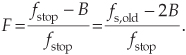
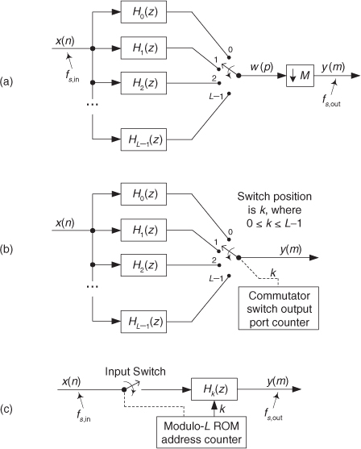
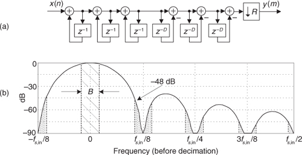
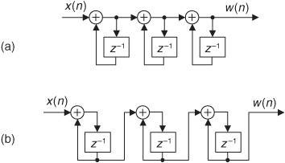
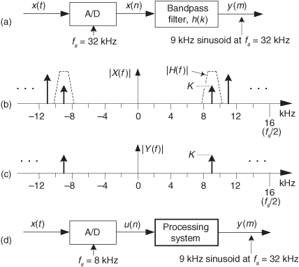

10 Sample Rate Conversion
The useful, and fascinating, process of sample rate conversion is a scheme for changing the effective sampling rate of a discrete time-domain signal sequence. We’ll fully explain that puzzling notion in a moment. But first, know that sample rate conversion has many applications; it’s primarily used to minimize computations by reducing signal data rates when a signal of interest’s bandwidth has been narrowed by lowpass filtering. Sample rate conversion is mandatory in real-time processing when two separate hardware processors operating at two different sample rates must exchange digital signal data. In satellite and medical image processing, sample rate conversion is necessary for image enhancement, scale change, and image rotation. Sample rate conversion is also used to reduce the computational complexity of certain narrowband digital filters.
In this chapter we’ll explore sample rate conversion by first looking at the process by way of a few examples. Then we introduce what are known as polyphase filters. With some knowledge under our belts, next we’ll review the standard mathematical notation used to describe sample rate conversion. Finally, we’ll examine the behavior of specialized digital filters that have found wide use in sample rate conversion applications.
We can define sample rate conversion as follows: Consider the process where a continuous signal x(t) has been sampled at a rate of fs,old = 1/Told, and the discrete samples are xold(n) = x(nTold). Sample rate conversion is necessary when we need xnew(n) = x(nTnew), and direct sampling of the continuous x(t) at the rate of fs,new = 1/Tnew is not possible. For example, imagine we have an analog-to-digital (A/D) conversion system supplying a sample value every Told seconds. But our processor can only accept data at a rate of one sample every Tnew seconds. How do we obtain xnew(n) directly from xold(n)? One possibility is to digital-to-analog (D/A) convert the xold(n) sequence to regenerate the continuous x(t) and then A/D convert x(t) at a sampling rate of fs,new to obtain xnew(n). Due to the spectral distortions induced by D/A followed by A/D conversion, this technique limits our effective dynamic range and is typically avoided in practice. Fortunately, accurate all-digital sample rate conversion schemes have been developed, as we shall see.
Sampling rate changes come in two flavors: rate decreases and rate increases. Decreasing the sampling rate is typically called decimation. When the sampling rate is being increased, the process is known as interpolation, i.e., computing intermediate sample values. Because decimation is the simpler of the two sample rate change operations, let’s examine it first.
10.1 Decimation
Decimation is the two-step process of lowpass filtering followed by an operation known as downsampling. Let’s first consider the notion of downsampling. We can downsample a sequence of sampled signal values by a factor of M by retaining every Mth sample and discarding all the remaining samples. Relative to the original sample rate, fs,old, the sample rate of the downsampled sequence is
For example, assume that an analog sinewave x(t) has been sampled to produce the xold(n) sequence shown in Figure 10-1(a). To downsample xold(n) by a factor of M = 3, we retain xold(0) and discard xold(1) and xold(2), retain xold(3) and discard xold(4) and xold(5), retain xold(6), and so on as shown in Figure 10-1(b). Mathematically, we describe the downsampled sequence as
Figure 10-1 Sample rate conversion: (a) original sequence; (b) downsampled by M = 3 sequence.

where M = 3, and m = 0, 1, 2, 3, etc.
Notice in Eq. (10-1′) that we’re using an alternate time index variable m, rather than n, in xnew(m) to remind us that the time period between the xnew(m) samples is different from the time period between the xold(n) samples. That is, the absolute time instant corresponding to m = 3 is not equal to the absolute time instant corresponding to n = 3.
The spectral implications of downsampling are what we should expect as shown in Figure 10-2, where the spectrum of an original band-limited sampled xold(n) signal is indicated by the solid lines, and the spectral replications are indicated by the dashed lines. With xnew(m) = xold(3n), xnew(m)’s spectrum, Xnew(f), is shown in Figure 10-2(b). Two important features are illustrated in Figure 10-2. First, Xnew(f) could have been obtained directly by sampling the original continuous x(t) signal at a rate of fs,new, as opposed to downsampling xold(n) by a factor of three. Second, there is a limit to the amount of downsampling that can be performed relative to the bandwidth B of the original signal. We must ensure that fs,new > 2B to prevent overlapped spectral replications (aliasing errors) after downsampling.
Figure 10-2 Decimation by a factor of three: (a) spectrum of original xold(n) signal; (b) spectrum after downsampling by three; (c) bandwidth B′ is to be retained; (d) lowpass filter’s frequency response relative to bandwidth B′.
If a decimation application requires fs,new to be less than 2B, then xold(n) must be lowpass filtered before the downsampling process is performed, as shown in Figure 10-2(c). (To clarify our terminology, we refer to decimation as the two-step process of lowpass filtering followed by downsampling.) If the original signal has a bandwidth B, and we’re interested in retaining only the band Bv, the signal spectrum above B′ must be lowpass filtered, with full attenuation in the stopband beginning at fstop, before the downsample-by-M process is performed. Figure 10-2(d) shows this in more detail where the frequency response of the lowpass filter, the bold lines, must attenuate the signal spectral components whose frequencies are greater than B′. Review the busy Figure 10-2(d) carefully and notice how the lowpass filter’s fstop frequency can be as high as fstop = fs,new–B′ and no spectral aliasing will occur in the B′ band of interest.
In practice, the nonrecursive tapped-delay line FIR filter structure in Figure 5-13 is the prevailing choice for decimation filters due to its linear phase response[1]. However, we need not apply xold(n) samples, one at a time, to an FIR lowpass filter and discard M–1 out of every M filter output samples. Instead, we could apply one xold(n) sample to the filter and compute an output sample, apply the next M consecutive xold(n) samples to the filter’s delay line and compute the next output, and continue applying M consecutive xold(n) samples for each new filter output sample. That way we do not compute filter output samples that are discarded. In Section 10.7 we’ll learn how to minimize the number of filter multiplications needed.
10.2 Two-Stage Decimation
When the desired decimation factor M is large, say M > 20, there is an important feature of the filter/decimation process to keep in mind. Significant lowpass filter (LPF) computational savings may be had by implementing the single-stage decimation, shown in Figure 10-3(a), in two stages as shown in Figure 10-3(b). There we decimate sequence xold(n) by integer factor M1 to produce the intermediate xint(n‘) sequence, which is then decimated by integer factor M2. The downsampling, sample rate decrease operation “↓M1” in Figure 10-3(b) means discard all but every M1th sample. The product of M1 and M2 is our desired decimation factor; that is, M = M1M2.
Figure 10-3 Decimation: (a) single-stage; (b) two-stage.
As a brief aside, the systems in Figure 10-3 are called multirate systems because there are two or more different data sample rates within a single system.
10.2.1 Two-Stage Decimation Concepts
Considering Figure 10-3(b), an important question is “Given a desired total downsampling factor M, what should be the values of M1 and M2 to minimize the number of taps in lowpass filters LPF1 and LPF2?” If, for example, M = 100, should M1M2 be 5 · 20, 20 · 5, 25 · 4, or maybe 10 · 10? Thankfully, thoughtful DSP pioneers answered this question for us[1]. For two-stage decimation, the optimum value for M1 is
where F is the ratio of Figure 10-3(a)’s single-stage lowpass filter’s transition region width to that filter’s stopband frequency. That is,
After using Eq. (10-2) to determine the optimum M1,opt factor, and setting M1 equal to the integer submultiple of M that is closest to M1,opt, the second downsampling factor is
10.2.2 Two-Stage Decimation Example
By way of example, let’s assume we have an xold(n) input signal arriving at a sample rate of 400 kHz, and we must decimate that signal by a factor of M = 100 to obtain a final sample rate of 4 kHz. Also, let’s assume the baseband frequency range of interest is from 0 to B′ = 1.8 kHz, and we want 60 dB of filter stopband attenuation. As such, a single-stage-decimation lowpass filter’s frequency magnitude response is shown in Figure 10-4(a).
Figure 10-4 Two-stage decimation: (a) single-stage filter response; (b) decimation by 100; (c) spectrum of original signal; (d) output spectrum of the M = 25 downsampler; (e) output spectrum of the M = 4 downsampler.
So, with fs,new = 4 kHz, we must filter out all xold(n)’s signal energy above fstop by having our filter transition region extend from 1.8 kHz to fstop = 4–1.8 = 2.2 kHz. Now let’s estimate the number of taps, N, required of a single-stage decimation-by-100 process. Using Chapter 5’s Eq. (5-49), and the notation fpass = B′ = 1.8 kHz, we estimate the filter tap length to be

taps. That’s a painfully large number! (Resist all temptation to propose using a 2727-tap FIR filter in any system design review meeting at your company, or else you may be forced to update your résumé.)
Happily, to reduce the number of necessary filter taps we can partition our decimation problem into two stages. With M = 100 and F = (2200–1800)/2200 = 4/22, Eq. (10-2) yields an optimum M1,opt downsample factor of 26.4. The integer submultiple of 100 closest to 26.4 is 25, so we set M1 = 25. Next, from Eq. (10-2″), M2 = 4 as shown in Figure 10-4(b).
In this two-stage decimation example we’ll assume the original Xold(f) input signal spectrum extends from zero Hz to something greater than 100 kHz as shown in Figure 10-4(c). If the first lowpass filter LPF1 has a passband cutoff frequency of 1.8 kHz and its fstop is defined as fs,int–B′ = 16–1.8 = 14.2 kHz, the output of the M1 = 25 decimator will have the spectrum shown in Figure 10-4(d). When filter LPF2 has a passband cutoff frequency of 1.8 kHz and its fstop is set equal to 4–1.8 = 2.2 kHz, the output of the M2 = 4 decimator will have our desired spectrum shown in Figure 10-4(e). The point is, the total number of taps in the two lowpass filters, Ntotal, is greatly reduced from the 2727 taps needed by a single filter stage. From the expression in Eq. (10-3) for the combined LPF1 and LPF2 filters, the total number of two-stage filter taps is roughly
This is an impressive computational savings, and it shows the kind of processing efficiency afforded by two-stage decimation[1,2]. Had we used M1 = 50 and M2 = 2 (or M1 = 10 and M2 = 10) in our decimation-by-100 example, the total number of two-stage filter taps would have been greater than 250. Thus M1 = 25 and M2 = 4 is the better choice.
10.2.3 Two-Stage Decimation Considerations
The multistage decimation design curves in reference [1] tell us that, for computational efficiency reasons, it’s always to our benefit to decimate in order from the largest to the smallest factor. That is, we make sure that M1 is greater than M2.
In two-stage decimation applications it is advantageous to consider setting the M1 and M2 decimation factors equal to integer powers of two because we can use computationally efficient half-band filters for the lowpass filters in Figure 10-4(b). We discuss the use of multirate half-band filtering later in Section 10.11.
There are two practical issues to consider for two-stage decimation. First, as we discussed regarding cascaded filters in Section 6.8.1, if the dual-filter system in Figure 10-4(b) is required to have a passband peak-peak ripple of R dB (R decibels), then both filters must be designed to have a passband peak-peak ripple of no greater than R/2 dB. Second, the number of multiplications needed to compute each xnew(m) output sample in Figure 10-4(b) is much larger than Ntotal because we must compute so many LPF1 and LPF2 output samples destined to be discarded. Later we’ll introduce an efficient decimation filter implementation scheme called polyphase decomposition that only requires Ntotal multiplications per xnew(m) output sample.
The advantages of two-stage decimation, over single-stage decimation, are
• an overall reduction in computational workload,
• reduced signal and filter coefficient data storage,
• simpler filter designs, and
• a decrease in the ill effects of finite binary-word-length filter coefficients.
These advantages become more pronounced as the overall desired decimation factor M becomes larger. To conclude our two-stage decimation discussion, be aware that reference [3] discusses aspects of multistage decimation where the number of stages is greater than two.
10.3 Properties of Downsampling
Let us now quickly review several interesting aspects of downsampling a discrete sequence (retaining every Mth sample and discarding all the remaining samples).
10.3.1 Time and Frequency Properties of Downsampling
First, we realize that downsampling is one of those rare processes that is not time invariant. From the very nature of its operation, we know if we delay the input sequence by one sample, a downsampler will generate an entirely different output sequence. For example, if we apply an input sequence x(n) = x(0), x(1), x(2), x(3), x(4), etc., to a downsampler and M = 3, the output y(m) will be the sequence x(0), x(3), x(6), etc. Should we delay the input sequence by one sample, our delayed xd(n) input would be x(1), x(2), x(3), x(4), x(5), etc. In this case the downsampled output sequence yd(m) would be x(1), x(4), x(7), etc., which is not a delayed version of y(m). Thus a downsampler is not time invariant. What this means is that if a downsampling operation is in cascade with other operations, we are not permitted to swap the order of any of those operations and the downsampling process without modifying those operations in some way. We first discussed this notion of time invariance in Section 1.7, and we’ll see an example of it in Section 10.13.
Second, downsampling does not cause time-domain signal amplitude loss. A sinusoid with a peak-peak amplitude of 10 retains this peak-peak amplitude after downsampling. However, downsampling by M does induce a magnitude loss by a factor of M in the frequency domain. That’s because, as we learned in Chapter 3, DFT magnitudes are proportional to the number of time-domain samples used in the transformation.
10.3.2 Drawing Downsampled Spectra
To illustrate the frequency properties of downsampling, let’s review an algorithm (a recipe) that tells us how to draw the spectrum of a downsampled signal. Drawing the spectrum of a downsampled lowpass signal is easy; we saw that in Figures 10-2(a) and 10-2(b). However, drawing the spectra of bandpass and highpass signals that have been downsampled can be a bit tricky. Here’s the process I use to draw the spectra of any type of downsampled signal.
We begin by looking at the spectral magnitude, |X(ω)| in Figure 10-5(a), of an x(n) time signal containing spectral energy at both low and high frequencies. To help clarify our discussion by making the associated spectra (we hope) easier to interpret, we use a complex-valued lowpass x(n) for this example. Regarding Figure 10-5(a), notice the following:
• The baseband spectral envelope of |X(ω)| is centered at zero Hz covering the frequency range of –π ≤ ωold ≤ π radians/sample (−fs,old/2 to fs,old/2 Hz), shown by the bold solid curve. Frequency fs,old is the original sample rate of x(n), measured in Hz.
• For clarity, and reference, we label the frequency axis in both radians/sample and Hz.
• The spectral replications in |X(ω)| are shown by the short-dashed curves, spaced at integer multiples of 2π radians/sample (fs,old Hz).
• |X(ω)| has a peak magnitude of P.
Figure 10-5 Spectra associated with downsampling by M = 3.
Assuming we want to downsample x(n) by a factor of M = 3 to create a y(m) sequence, the following steps show how to determine the |Y(ω)| spectrum based on the known |X(ω)|:
1. Draw the |X(ω)| spectrum of sequence x(n) showing at least one spectral replication in both the positive- and negative-frequency directions. We did that in Figure 10-5(a).
2. Insert M–1 equally spaced copies of the primary spectral envelope between the primary spectral envelope and the spectral replications centered at ωold = ±2π. The spectral spacing of the M–1 inserted copies should be multiples of 2π/M radians/sample as shown by the long-dashed curves in Figure 10-5(b).
3. Scale upward the frequency axis values of |Y(ω)| by a factor of M, yielding the new ωnew frequency axis variable as shown in Figure 10-5(c).
4. Finally, scale downward the vertical axis of |Y(ω)| by a factor of 1/M. This produces a peak magnitude for |Y(ω)| of P/M as shown in Figure 10-5(c).
We zoom in on the |Y(ω)| spectrum in Figure 10-5(d) to show enhanced detail.
10.4 Interpolation
As we said before, downsampling is only part of the sample rate conversion story—let’s now consider interpolation. Sample rate increase by interpolation is a bit more involved than decimation because with interpolation new sample values need to be calculated. Conceptually, interpolation comprises the generation of a continuous x(t) curve passing through our xold(n) sampled values, as shown in Figure 10-6(a), followed by sampling that curve at the new sample rate fs,new to obtain the interpolated sequence xnew(m) in Figure 10-6(b). Of course, continuous curves cannot exist inside a digital machine, so we’re forced to obtain xnew(m) directly from xold(n). To increase a given fs,old sample rate by an integer factor of L we must insert L–1 zero-valued samples between each sample in xold(n), creating a longer-length sequence. To the end of that longer sequence we append L–1 zero-valued samples. Those two steps are what we call upsampling, indicated by the “↑L” operation in Figure 10-6(c). Next, we apply the upsampled sequence to a lowpass filter whose output is the interpolated sequence in Figure 10-6(b).
Figure 10-6 Interpolation: (a) original time sequence; (b) interpolated by L = 3 sequence; (c) interpolation functional notation.
We formally refer to interpolation as the two-step process of upsampling followed by lowpass filtering. The process of interpolation is beautifully straightforward and best understood by way of an example.
Let’s assume we have the sequence xold(n), part of which is shown in Figure 10-7(a), and we want to increase its sample rate by a factor of L = 4. The xold(n) sequence’s spectrum is provided in Figure 10-7(a) where the signal spectrum between zero Hz and 4fs,old is shown. Please notice that the dashed curves in Xold(f) are spectral replications. To upsample xold(n) by a factor of four, we insert three zeros between each sample of xold(n) and append the last three zeros, as shown in Figure 10-7(b), to create the new intermediate sequence xint(m). Notice that the old sequence is embedded in the new sequence. The insertion of the zeros (a process often called zero stuffing) establishes the sample index for the intermediate sequence xint(m) where the interpolated values will be assigned.
Figure 10-7 Interpolation by four: (a) original sampled sequence and its spectrum; (b) zeros inserted in original sequence and resulting spectrum; (c) output sequence of interpolation filter and final spectrum.
The spectrum of xint(m), Xint(f), is shown in Figure 10-7(b) where fs,new = 4fs,old. The solid curves in Xint(f), centered at multiples of fs,old, are called images. What we’ve done by adding the zeros is merely increase the effective sample frequency to fs = fs,new in Figure 10-7(b). The final step in interpolation is to filter the xint(m) sequence with the lowpass filter shown in Figure 10-6(c). That filter’s frequency magnitude response is crudely shown as the dashed lines centered at zero Hz, and fs,new Hz, in Figure 10-7(b). The lowpass filter’s job is to attenuate the spectral images shown in Figure 10-7(b). This lowpass filter is called an interpolation filter, and its output sequence is the desired xnew(m) sequence in Figure 10-7(c) having the spectrum Xnew(f) containing residual spectral images. We’ll discuss those residual images in a moment.
10.5 Properties of Interpolation
Here we discuss several important aspects of the interpolation (upsampling followed by lowpass filtering) process depicted in Figure 10-7.
10.5.1 Time and Frequency Properties of Interpolation
Because we cannot implement an ideal lowpass interpolation filter, xnew(m) will not be an exact interpolation of xold(n). The error manifests itself as the residual spectral images in Xnew(f) as indicated in Figure 10-7(c). With an ideal filter, these images would not exist, but we can only approximate an ideal lowpass interpolation filter. The issue to remember is that the accuracy of our entire interpolation process depends on the stopband attenuation of our lowpass filter. The greater the stopband attenuation, the more accurate the interpolation. As with decimation, interpolation can be thought of as an exercise in lowpass filter design.
Note that our interpolation process, because of the zero-valued samples, has an inherent amplitude loss factor of L when a unity-gain lowpass filter is used. That is, the peak sample value of xnew(m) is equal to the peak sample value of xold(n) divided by L. Thus, to achieve unity gain between sequences xold(n) and xnew(m), the lowpass interpolation filter must have a gain of L at zero Hz.
Although there is a time-domain gain (amplitude) loss of L by upsampling and filtering, that loss is canceled in the discrete frequency domain by the L-fold gain in the magnitudes of the discrete Fourier transform (DFT) of an xnew(m) sequence that is L times longer in duration than the original xold(n) time sequence. (We’re repeating a fact we learned in Chapter 3—DFT magnitudes are proportional to the length of the time sequence being transformed.)
Rather than perform the upsampling in Figure 10-7(b), we might be inclined to merely repeat each xold(n) sample three times to generate the new upsampled xint(m) sequence. Such a maneuver would indeed help attenuate the unwanted spectral images, but sadly the resulting low-frequency Xint(m) spectral magnitude shape will be the original desired Xold(m) spectrum multiplied by a sin(x)/x function. If this happens, then the follow-on lowpass filter must compensate for that spectral magnitude roll-off distortion. Such non-flat passband sin(x)/x-compensation filters require so many additional taps that the “repeat each xold(n) sample” scheme is unwise. In fact, later we’ll discuss an efficient interpolation filtering scheme called polyphase filtering wherein we don’t bother to create the upsampled xint(m) sequence at all.
There’s one further issue regarding interpolation. You might tend to think that interpolation was born of our modern-day signal processing applications such as cell phones and compact disc players. Please don’t. Ancient astronomical cuneiform tablets, originating from Uruk and Babylon (200 years before the birth of Jesus), indicate that linear interpolation was used to fill in the missing tabulated positions of celestial bodies for those times when atmospheric conditions prevented direct observation[4]. Interpolation has been used ever since, for filling in missing data.
10.5.2 Drawing Upsampled Spectra
To illustrate the frequency properties of upsampling (insertion of zero-valued samples), and to demonstrate the method for drawing the spectra of upsampled signals, consider the spectral magnitude, |X(ω)| in Figure 10-8(a), of a lowpass x(n) time signal. Regarding Figure 10-8(a), notice the following:
• The baseband spectral envelope of |X(ω)| is centered at zero Hz covering the frequency range of roughly –π ≤ ωold ≤ π radians/sample (−fs,old/2 to fs,old/2 Hz), shown by the solid lines. Frequency fs,old is the original sample rate of x(n), measured in Hz.
• For clarity, and reference, we label the frequency axis in both radians/sample and Hz.
• The spectral replications in |X(ω)| are shown by the dashed-line spectral envelopes spaced at integer multiples of 2π radians/sample (fs,old Hz).
• |X(ω)| has a peak magnitude of P.
Figure 10-8 Spectra associated with upsampling by L = 3.
Assuming we want to upsample x(n) by a factor of L = 3, for example, to create a y(m) sequence, the following steps show how to determine the |Y(ω)| spectrum of y(m):
1. Draw the |X(ω)| spectrum of sequence x(n) showing at least L = 3 spectral replications in both the positive- and negative-frequency directions. We did that in Figure 10-8(a).
2. Scale downward the frequency axis values of X(ω) by a factor of L, yielding the new ωnew frequency variable as shown in Figure 10-8(b).
3. Finally, indicate the spectral images (destined to be attenuated by subsequent lowpass filtering) by using solid lines to represent their spectral envelopes, as we did in Figure 10-8(b).
10.6 Combining Decimation and Interpolation
Although changing sampling rates, through decimation or interpolation, by integer factors is quite common in practice, what can we do if we need a sample rate change that is not an integer? The good news is that we can implement sample rate conversion by any rational fraction L/M with interpolation by an integer factor L followed by decimation by an integer factor M. Because the ratio L/M can be obtained as accurately as we want, with the correct choice of integers L and M, we can change sample rates by almost any factor in practice. For example, a sample rate increase by a factor of 7.125 can be performed by an interpolation by L = 57 followed by a decimation by M = 8, because 7.125 = 57/8.
This L/M sample rate change is illustrated as the processes shown in Figure 10-9(a). The neat part here is that the computational burden of changing the sample rate by the ratio of L/M is less than the sum of an individual interpolation followed by an individual decimation. That’s because we can combine the interpolation filter LPFL and the decimation filter LPFM into a single filter shown as LPFL/M in Figure 10-9(b). The process in Figure 10-9(b) is normally called a sample rate converter because if L > M we have interpolation, and when M > L we have decimation. (The filter LPFL/M is often called a multirate filter.)
Figure 10-9 Sample rate conversion by a rational factor: (a) combination interpolation/decimation; (b) single lowpass filter method.
Filter LPFL/M must sufficiently attenuate the interpolation spectral images so they don’t contaminate our desired signal beyond acceptable limits after decimation. To accomplish this task, lowpass filter LPFL/M must attenuate all spectral components whose frequencies are above fs,old/2 or (fs,old/2) · (L/M), whichever is smaller, where fs,old is xold(n)’s sample rate in Hz. The stopband attenuation of LPFL/M must be great enough that the attenuated upsampled images do not induce intolerable levels of noise when they’re aliased by downsampling by M into the final band of 0 to fs,new/2 Hz, where fs,new is the filter’s data rate, in Hz.
Again, our interpolator/decimator designs are exercises in lowpass filter design, and all the knowledge and tools we have to design lowpass filters can be applied to this task. In software interpolator/decimator design, we want our lowpass filter algorithm to prevent aliasing images and be fast in execution time. For hardware interpolator/decimators, we strive to implement designs optimizing the conflicting goals of high performance (minimum spectral aliasing), simple architecture, high data throughput speed, and low power consumption.
The filtering computational workload in rational-factor sample rate conversion, as we’ve presented it here, is sadly inefficient. Think about interpolating a signal sequence by a factor of 4/3; we’d insert the zero-valued samples into the original time sequence and apply it to a lowpass filter. Three-fourths of the filter multiplication products would necessarily be zero. Next, we’d discard two-thirds of our computed filter output values. Very inefficient! Fortunately, we are now prepared to introduce special sample rate conversion filters, called digital polyphase filters, that avoid these computational inefficiencies.
10.7 Polyphase Filters
In this section we introduce the fascinating, and exceedingly useful, subject of digital polyphase FIR filters. These filters have the ability to eliminate all multiply by zero operations in interpolation, as well as avoid the wasteful computation of filter output samples that are subsequently discarded in decimation applications.
Let’s assume that a linear-phase FIR interpolation filter design requires an N = 12-tap filter; our initial plan is to pass the upsampled by L = 4 xint(m) sequence in Figure 10-10(a) through the 12-tap FIR filter coefficients shown in Figure 10-10(b) to obtain the desired xnew(m) sequence. (This filter, whose coefficients are the h(k) sequence, is often called the prototype FIR filter. That’s because later we’re going to modify it.) Notice that with time advancing to the right in Figure 10-10(a), the filter coefficients are in reversed order as shown in Figure 10-10(b). This filtering requires 12 multiplications for each xnew(m) output sample, with 9 of the products always being zero. As it turns out, we need not perform all 12 multiplications.
Figure 10-10 Interpolation by four with a 12-tap lowpass FIR filter: (a) filter input samples; (b) filter coefficients, s, used to compute xnew(m).
To show this by way of an example, Figure 10-11(a) shows the xint(m) samples just filling the filter’s delay line so that we can compute the xnew(m=11) output sample. The 12 filter coefficients are indicated by the symbols.
Figure 10-11 Filter coefficients used to calculate various xnew(m) samples.
With the dots in Figure 10-11(a) representing the xint(m) sequence, we see that although there are nine s and three , only the three generate nonzero products contributing to the convolution sum xnew(11). Those three represent FIR filter coefficients h(3), h(7), and h(11). The issue here is that we need not perform the multiplications associated with the zero-valued samples in xint(m). We only need to perform three multiplications to obtain xnew(11). To see the polyphase concept, remember that we use the prototype filter coefficients indicated by the to compute xnew(12). When we slide the filter’s impulse response to the right one sample, we use the coefficients indicated by the circles, in Figure 10-11(b), to calculate xnew(12) because the nonzero values of xint(m) will line up under the circled coefficients. Those circles represent filter coefficients h(0), h(4), and h(8).
Likewise, when we slide the impulse response to the right one more sample to compute xnew(13), we use the coefficients indicated by the diamonds in Figure 10-11(c). Finally, we slide the impulse response to the right once more and use the coefficients indicated by the triangles in Figure 10-11(d) to compute xnew(14). Sliding the filter’s impulse response once more to the right, we would return to using the coefficients indicated by the to calculate xnew(15). You can see the pattern here—there are L = 4 different sets of coefficients used to compute xnew(m) from the xold(n) samples. Each time a new xnew(m) sample value is to be computed, we rotate one step through the four sets of coefficients and calculate as
and so on. The beautiful parts here are that we don’t actually have to create the xint(m) sequence at all, and we perform no multiply by zero computations. That is polyphase filtering.
The above list of calculations not only shows us what filtering to do, it shows us how to do it. We can implement our polyphase interpolation filtering technique with a bank of four subfilters as shown in Figure 10-12. This depiction is called the commutator model for polyphase interpolation filters. We have a commutator switch rotating one complete cycle after the arrival of each new xold(n) sample. This way, four xnew(m) samples are computed for each xold(n) input sample.
Figure 10-12 Polyphase interpolation by L = 4 filter structure as a bank of FIR subfilters.
In the typical case, if our polyphase filter is interpolating by a factor of L, then we’ll have L subfilters. As such, for convenience the number of taps in (the impulse response length of) the original prototype lowpass FIR filter, N, is chosen to be an integer multiple of L. Again, the passband width of the prototype lowpass FIR filter must not be greater than fs,old/2 where fs,old is xold(n)’s sample rate in Hz.
A minimum data storage structure for the polyphase interpolation filter is shown in Figure 10-13, where three commutators rotate (in unison) counterclockwise through four sets of filter coefficients upon the arrival of each new xold(n) sample. Again, four xnew(m) samples are computed for each xold(n) sample.
Figure 10-13 Minimum-storage polyphase interpolation filter structure using commutated coefficients.
This commutated-coefficients scheme has the advantage of reducing the number of storage registers for the xold(n) input samples. If our polyphase filter is interpolating by a factor of L, then we have L sets of coefficients.
We can validate our polyphase FIR filter block diagrams with z-transform equations. We start by describing our Figure 10-12 polyphase FIR filter with
where zin–1 is a unit delay at the input sample rate, and zout–1 is a unit delay at the output sample rate implemented with the commutator. Because zin–1 = zout–4, and zin–2 = zout–8, we can write
which is the classic z-domain transfer function for a 12-tap FIR filter. Equation (10-4) is called a polyphase decomposition of Eq. (10-4′).
Concerning our Figure 10-11 example, there are several issues to keep in mind:
• For an interpolation factor of L, most people make sure the prototype FIR has an integer multiple of L number of stages for ease of implementation.
• As with the zeros-insertion and filtering method of interpolation, the polyphase method has a gain loss equal to the interpolation factor L. To compensate for this amplitude loss we can increase the filter’s coefficients by a factor of L, or perhaps multiply the xnew(m) output sequence by L.
• Our Figure 10-11 example used a prototype filter with an even number of taps, but an odd-tap prototype FIR interpolation filter can also be used[5]. For example, you could have a 15-tap prototype FIR and interpolate by 5.
• Because the subfilter coefficient sets in Figure 10-13 are not necessarily symmetrical, we can’t reduce the number of multiplications by means of the folded FIR structure discussed in Section 13.7.
With the commutating switch structure of Figure 10-12 in mind, we can build a decimation-by-four polyphase filter using a commutating switch as shown in Figure 10-14. The switch rotates through its four positions (M = 4), applying four xold(n) input samples to the subfilters, then the four subfilters’ outputs are accumulated to provide a single xnew(m) output sample. In this filter the commutating switch rotates in the counterclockwise direction.
Figure 10-14 Polyphase decimation by M = 4 filter structure as a bank of FIR subfilters.
Notice that the subfilters in Figure 10-14 are unchanged from the interpolation filter in Figure 10-12. Again, the benefit of polyphase decimation filtering means no unnecessary computations are performed. We’re decimating before filtering, so no filter computational results are discarded.
In the typical case, if our polyphase filter is decimating by a factor of M, then we’ll have M subfilters. As such, for convenience the number of taps in (the impulse response length of) the original prototype lowpass FIR filter, N, is chosen to be an integer multiple of M. The passband width of the prototype lowpass filter must not be greater than (fs,old/2) · (L/M) where fs,old is xold(n)’s sample rate in Hz.
Again, in practice, large changes in sampling rate are accomplished with multiple stages (where Figure 10-14, for example, is a single decimation stage) of cascaded smaller rate change operations of decimation and interpolation as discussed in Sections 10.2 and 10.8. With that thought in mind, now is the appropriate time to discuss two-stage interpolation.
This concludes our brief introduction to the important topic of discrete polyphase filters. (For my money, the development of polyphase filters arguably resides in the stratosphere of brilliant DSP innovations, along with the radix-2 FFT algorithm and the Parks-McClellan FIR filter design algorithm.) More detailed information on polyphase filters can be found in references [6–8] and my favorite, reference [9].
10.8 Two-Stage Interpolation
Because we’re now familiar with the notion of polyphase filtering, we’re ready to consider the process of two-stage interpolation. When a desired interpolation factor L is large, say L > 20, significant interpolation filter computational savings may be had by implementing the interpolation in Figure 10-15(a) in two stages as shown in Figure 10-15(c). In the later figure we interpolate input sequence xold(n) by integer factor L1 followed by interpolation by integer factor L2, where L = L1L2.
Figure 10-15 Interpolation: (a) single-stage; (b) lowpass filter (LPF) magnitude response and upsampled xint(m) spectrum; (c) two-stage interpolation; (d) two-stage polyphase interpolation.
10.8.1 Two-Stage Interpolation Concepts
Let’s assume we want to interpolate Figure 10-15(a)’s input xold(n) sequence by L, so we insert the L–1 zero-valued samples appropriately in xold(n) to create the xint(m) sequence whose spectral magnitude is shown as the dashed lines in Figure 10-15(b). The lowpass filter (LPF) in Figure 10-15(a) must have a frequency magnitude response, shown as the solid lines in Figure 10-15(b), that eliminates the spectral images in the xint(m) sequence’s Xint(f) spectrum. As such, the filter LPF’s transition region extends from B Hz to fstop = fs,old–B = fs,new/L–B Hz. (Frequency fstop is the beginning of the lowpass filter’s stopband.) Given that frequency response requirement, we could now begin to design the lowpass filter LPF.
However, using Figure 10-15(c)’s two-stage interpolation, we can accomplish our overall interpolation by L where the combined number of computations in filters LPF1 and LPF2 is much smaller than the computations needed in the single Figure 10-15(a) LPF filter. This computational workload reduction can be achieved by determining the optimum L1 and L2 factors for our two-stage interpolation in Figure 10-15(c), just as we did in finding the optimum downsampling factors in two-stage decimation.
Given the desired upsampling factor L in Figure 10-15(a), we can determine the L1 and L2 upsampling factors that minimize the number of overall two-stage filtering multiplications per input sample using
where F is the ratio of the LPF filter’s transition region width over the filter’s stopband frequency, as shown in Figure 10-15(b). That is,

Upon using Eq. (10-5) to compute L2,opt, and setting L2 equal to the integer submultiple of L that is closest to L2,opt, the first interpolation factor L1 is found using
So, once we know the optimum values for L1 and L2, we proceed by designing the LPF1 and LPF2 lowpass filters in Figure 10-15(c). Finally, we implement the two-stage interpolation using two polyphase interpolation filters, PLPF1 and PLPF2, as shown in Figure 10-15(d). Let’s illustrate this two-stage interpolation concept with an example.
10.8.2 Two-Stage Interpolation Example
Assume we must convert a compact disc (CD) audio signal, having a signal bandwidth of 15 kHz and a sample rate of 44.1 kHz, to the sample rate of 96 kHz used by a high-performance audio system. In addition, let’s assume that our interpolation filtering requires a stopband attenuation of 60 dB. We can accomplish this sample rate conversion by interpolating the CD signal by a factor of L = 320, and then decimate the interpolated signal by M = 147. So this two-stage interpolation example will show how to efficiently interpolate an input signal sequence by L = 320, yielding an interpolated sequence having a sample rate of fs,new = L · fs,old = 320 · 44.1 = 14112 kHz.
The bold lines in Figure 10-16(a) show the frequency requirements of the lowpass filter that we need for a single-stage L = 320 interpolation process. It is that magnitude response that we will implement using two cascaded polyphase interpolation filter stages. The sample rate in Figure 10-16(a) is fs,new = 14112 kHz.
Figure 10-16 Two-stage interpolation: (a) single-stage filter frequency parameters; (b) LPF1 filter parameters; (c) LPF2 filter parameters; (d) polyphase implementation.
First we determine the optimum L1 and L2 interpolation factors. With fstop = 29.1 kHz and B = 15 kHz, we use Eq. (10-5′) to compute ratio F as

Next, we compute L2,opt using Eq. (10-5) as
The integer submultiple of L = 320 that’s closest to L2,opt = 37.98 is 40. So we set L2 = 40, and using Eq. (10-5″), we compute L1 = 320/40 = 8.
So the first polyphase lowpass filter, LPF1, must have the frequency magnitude response shown in Figure 10-16(b) when its operating sample rate is L1 · fs,old = 8 · 44.1 = 352.8 kHz. (That 352.8 kHz sample rate would have been the LPF1 filter’s input rate had we inserted the L1–1 zero-valued samples between each of the original CD samples. Recall that with polyphase filtering we don’t actually insert any zero-valued samples, but we must design a polyphase filter assuming the upsampled 352.8 kHz sample rate.)
Using Eq. (10-3) to estimate the number of taps in LPF1, NLPF1, with Atten = 60, we compute
Because we must partition the LPF1 coefficients into a polyphase bank of L1 = 8 subfilters, NLPF1 must be an integer multiple of 8. So we’ll set NLPF1 = 72 taps, and the polyphase LPF1 filter will have 8 subfilters.
The second polyphase lowpass filter, LPF2, must have the frequency magnitude response shown in Figure 10-16(c) when its operating sample rate is L1 · L2 · fs,old = 14112 kHz. Using Eq. (10-3) to estimate the number of taps in LPF2, NLPF2, with Atten = 60, we compute
Because we must partition the LPF2 coefficients into a polyphase bank of L2 = 40 subfilters, NLPF2 must be an integer multiple of 40. So we’ll set NLPF2 = 120 taps, and the polyphase LPF2 filter will have 40 subfilters. We implement our two-stage interpolation as shown in Figure 10-16(d), and that completes our two-stage interpolation example.
The number of multiplies in our two-stage polyphase interpolation process is NLPF1 + L1 · NLPF2 = 1032 multiplies per xold(n) input sample. If we had implemented our interpolation by L = 320 using a single polyphase filter having 320 subfilters, we would have had to perform 2880 multiplies per xold(n) input sample. So, happily, our two-stage interpolation process reduced the number of necessary filter multiplies by almost a factor of three relative to a single-stage interpolation.
10.8.3 Two-Stage Interpolation Considerations
Due to the duality between decimation and interpolation, for computational efficiency reasons as presented in reference [3], it’s beneficial to interpolate in order from the smallest to the largest factor. That is, we make sure that L1 is smaller than L2.
Also, it is advantageous to consider setting the L1 and L2 interpolation factors equal to integer powers of two because we can use computationally efficient half-band filters for the lowpass filters in Figure 10-15(c). We discuss the use of multirate half-band filtering later in Section 10.11.
As with dual-stage decimation, if the single-filter system in Figure 10-15(a) is required to have a passband peak-peak ripple of R dB (R decibels), then each filter in Figure 10-15(c) must be designed to have passband peak-peak ripple of no greater than R/2 dB. We have previously mentioned that interpolation has an inherent amplitude loss. Thus, to achieve unity gain between sequences xold(n) and xnew(m) in Figure 10-15(c), the product of the DC (zero Hz) gains of the LPF1 and LPF2 filters must be equal to L.
The advantages of two-stage interpolation, over single-stage interpolation, are identical to the advantages of two-stage decimation listed at the end of Section 10.2. Be aware that references [1] and [3] discuss aspects of multistage interpolation where the number of stages is greater than two.
In concluding this section, we mention that Chapter 13 contains three DSP tricks regarding interpolation of time-domain signals. Now that we have some familiarity with sample rate conversion, for completeness let’s review the standard mathematical notation used to describe these operations using polyphase filters. Learning that notation will aid readers as they encounter other descriptions of sample rate conversion in the literature of DSP.
10.9 z-Transform Analysis of Multirate Systems
In preparation for the multirate filter material in the following sections, here we formalize both our terminology and notation of sample rate conversion operations.
First, there is a fair amount of variety (some would call it “ambiguity”) in the literature of DSP regarding the language of sample rate conversion. If you’ve been reading the literature, you may have noticed that the terminology used has been, unfortunately, very inconsistent—sometimes downright confusing. A wide variety of terms are used in the literature as shown in Figure 10-17 where “LPF” means lowpass filter. In the spirit of consistency, from here on we’ll use the terminology indicated by the bold underlined font in Figure 10-17.
Figure 10-17 Sample rate conversion terminology: (a) sample rate increase; (b) sample rate reduction.
10.9.1 Signal Mathematical Notation
Compared to the written language of sample rate conversion, the mathematical notation of sample rate conversion is quite consistent if we use z-transform representations. For example, if a time-domain sequence x(n), having a z-transform of
is upsampled by two (L = 2, a single zero-valued sample is inserted between each x(n) sample), producing a w(m) sequence as shown in Figure 10-17(a), then we can describe w(m) as
Equation (10-10) indicates that every other w(m) sample is zero. Considering only the nonzero values of w(m), the z-transform of w(m) is expressed as

where m represents even-valued integers and k represents all integers. If the w(m) sequence is an upsampled-by-integer-L version of x(n) (inserting L–1 zero-valued samples between each x(n) sample), then w(m)’s z-transform is expressed as
In a similar manner, some authors express the z-transform of sequence x(n) as
So here is the point: When we see expressions like Eqs. (10-11), (10-12), or (10-13), they merely mean that sequence w(m) is an upsampled-by-L version of sequence x(n), and sequence x(n) is a decimated-by-L version of sequence w(m).
10.9.2 Filter Mathematical Notation
With the above multirate notation fresh in our minds, let’s consider how we can use that notation to describe digital polyphase filters. If we have a tapped-delay line FIR filter, having N taps, whose impulse response is h(k), then we can represent the filter’s z-domain transfer function as
For an N = 9-tap FIR filter, for example, from Eq. (10-14) its z-domain transfer function is
In both up- and downsample-by-integer-factor-Q filtering applications, for computational efficiency reasons, we partition H(z) into Q separate subfilters using the polyphase decomposition process. For example, if Q = 3, we can write H(z) as
(Read no further until you convince yourself that Eqs. (10-15) and (10-16) are equivalent.) Due to the exponents of z in Eq. (10-16) we can write
where
The notation in the last line of Eq. (10-17) seems, at first, like a needless complication in describing the 9-tap h(k) filter, but shortly we will see why such notation is very useful.
10.10 Polyphase Filter Implementations
Let’s now use the above z-domain transfer functions to help us understand the most popular forms of polyphase filtering in multirate systems. Equation (10-17), when followed by downsampling by M = 3, is depicted graphically in Figure 10-18, showing the three subfilters. We interpret the notation of the top subfilter, H0(z3) in Figure 10-18, as a tapped-delay line wherein there are M = 3 delay elements between each tap. To pause for a moment, what we’re doing here is showing the algebraic and graphical notation used to describe the polyphase decomposition of a 9-tap prototype FIR filter used in a decimation-by-three application.
Figure 10-18 Polyphase decomposition of H(z) prior to downsampling by M = 3.
The detailed structure of the FIR filter in Figure 10-18 is shown in Figure 10-19, where we see the polyphase decomposition of h(k) into three subfilters, creating a polyphase filter.
Figure 10-19 Details of the polyphase decomposition of H(z) for decimation M = 3.
When the multirate concepts described above were first applied to the impulse responses of digital filters, DSP pioneers quickly arrived at the impressive-sounding “noble identities” graphically depicted in Figure 10-20. Those complementary identities, showing the equivalency of swapping the order of filters and up/downsamplers, are exceedingly useful in the analysis and implementation of multirate systems as we shall see in the next section. In Figure 10-20 the H(z) term is the z-transform of a filter’s h(n) impulse response, and the H(zQ) term is the z-transform of h(n) upsampled by integer Q, similar in form to Eqs. (10-17) and (10-17′).
Figure 10-20 Noble identities of multirate systems: (a) sample rate increase; (b) sample rate reduction.
Using the noble identities, we can move the downsampling by M = 3 operation in front of the subfilters in Figure 10-18 as shown in Figure 10-21(a). A detailed depiction of the polyphase filter is provided in Figure 10-21(b), where we also rearranged the initial delay elements at the input of the filter.
Figure 10-21 Polyphase decomposition of h(k), for decimation by M = 3: (a) simplified depiction; (b) detailed depiction.
In that figure we see that the delay lines between the filter coefficients now contain only a single delay element and the subfilters can be described by
The upper subfilters in Figures 10-19 and 10-21(b) make obvious the meaning of our notation regarding H0(z3) and H0(z), for example. That is, H0(z3) is merely an upsampled-by-three version of H0(z).
One final simplification available for polyphase decimation filters is shown in Figure 10-22, where the two initial delay elements and the downsampling by M = 3 operations in Figure 10-21(b) are replaced by a three-position commutating (multiplexing) switch. One y(m) output sample is produced each time the switch completes a single full (three-step) rotation.
Figure 10-22 Simplified polyphase decomposition of h(k), for decimation by M = 3.
In an identical manner, interpolation by L = 3 (upsampling by three followed by lowpass filtering) by way of polyphase decomposition is depicted in Figure 10-23(a). The subfilters in that figure are identical to the subfilters from Eq. (10-17) and Figure 10-19. Looking at Figure 10-23(b), we see that the upsamplers insert two zero-valued samples between each output sample of the three subfilters. The delay elements delay those upsampled sequences by various delay times such that at each output time instant only one of the inputs to the final summation is nonzero. So instead of performing a summation of mostly zero-valued samples, we can select only the path to the summer that contains a nonzero sample.
Figure 10-23 Polyphase decomposition of h(k), for interpolation by L = 3: (a) simple depiction; (b) reduced-length subfilters; (c) final structure.
Thinking about this path selection process (multiplexing), happily we can use the three-path commutating switch in Figure 10-23(c) for multipath selection and eliminate the delay elements, the upsamplers, and the final summation. As each new x(n) input sample is available, the switch completes a single full (three-step) rotation, producing three y(m) output samples.
Again, the purpose of the material in this section is to show the algebraic and graphical notation typically used to describe FIR polyphase filters used in sample rate conversion applications.
The major benefits of using polyphase filters for sample rate conversion are:
• Signal data storage requirements are minimized.
• No multiply by zero computations are performed (for interpolation).
• No computational results are discarded (for decimation).
• A key benefit is that the computations are performed at the lower sample rate. For an N-tap FIR filter, polyphase decimation implementations reduce the number of multiplications per unit time to 1/M times the number of multiplications per unit time with no polyphase decomposition. This advantage may be critical in high-data-rate applications and leads to lower power consumption in battery-powered devices.
In the following sections we introduce several specialized digital filters developed specifically to minimize the computational workload encountered in sample rate conversion applications. As such, let’s have a look at rational-factor sample rate change filters first.
10.11 Sample Rate Conversion by Rational Factors
In the event that we wish to resample a signal by a rational factor L/M (as in Figure 10-9(b)), we can interpolate by integer factor L followed by downsampling by integer factor M. Our single lowpass filter comprises the L polyphase subfilters shown in Figure 10-24(a), where the input and output sample rates are related by
Figure 10-24 Resampling by rational-factor L/M: (a) fundamental process; (b) no downsampling; (c) addressed-ROM scheme.

However, this naive approach would not be sensible because we’d be computing some w(p) samples that are destined to be discarded by the downsample-by-M process.
Attempting to avoid that computational inefficiency, we can omit the downsampling process altogether and merely control the position of the interpolator’s output commutating switch position as depicted in Figure 10-24(b). For example, if we rotate the switch but skip alternate switch output ports, we achieve resampling by a factor of L/2. If we advance the switch to every third output position, for each y(m) output sample, we’ll have resampling by a factor of L/3, and so on. This commutating switch control mechanism idea means that we need only compute the output of a single subfilter for each y(m) output sample. In resampling by a rational factor L/M, the switch output port (index of a single subfilter) used to compute a y(m) output sample is found using
where <mM>L means compute the product mM modulo-L. So the switch output port counter in Figure 10-24(b) is a binary modulo-L counter. As the resampler operates, the index n, of the most recent input x(n) applied to the subfilters, is given by
where means the integer part of mM/L. The actual resampler difference equation is
where N is the number of taps in the prototype FIR filter from which the polyphase Hk(z) subfilters in Figure 10-24(b) were obtained.
For a numerical example, the left side of Table 10-1 shows the commutating switch output port index k (index of a single subfilter), and the input x(n) index n, as a function of a resampler’s mth y(m) output sample index for resampling by a factor of L/M = 4/3. In this case, the switch counter counts as k = 0,3,2,1,0,3,2,1, and so on. The right side of Table 10-1 shows the switch indexing for resampling by 3/4. In that scenario, the switch counter counts as k = 0,1,2,0,1,2, and so on.
Table 10-1 Indexing for Resampling by 4/3 and 3/4

In our daily lives we hear the phrase “Timing is everything.” Well, that’s certainly true in our resampling schemes. In Figure 10-24(b) we must remember that when the commutating switch resides at position k = 0, and when during its cycling it crosses the k = 0 position, we must input a new x(n) sample before we compute a y(m) output sample. The times when a new x(n) input sample is applied to the subfilters, before a y(m) sample is computed, are indicated by the left-pointing arrows in Table 10-1.
Be aware that it’s possible that more than one x(n) input sample must be applied to the resampler prior to an output y(m) computation for decimation applications. For example, on the right side of Table 10-1, when m = 3, we are forced to apply both the x(3) and x(4) input samples to the resampler before computing y(3).
OK, let’s stop and catch our breath here. If we were to substitute the expressions for k and n, from Eqs. (10-20) and (10-20′), into Eq. (10-20″), we would produce a rather complicated algebraic expression for y(m). However, we will not let such an equation for y(m) intimidate us because the h(pL + k) term in Eq. (10-20″) merely specifies the coefficients of the kth subfilter, and the x(n – p) term simply defines the x(n) input samples residing in that kth subfilter. As such, we see that Eq. (10-20″) is no more than a convolution equation where the summation index p accounts for each of the N/L coefficients in a subfilter. (N/L is an integer.)
Notice that the tapped-delay lines of each subfilter in Figure 10-24(b) contain the same x(n) time samples. To reduce input signal data storage requirements, we can use a single tapped-delay line as we described for Figure 10-13. So in our rational-factor resampling implementation, shown in Figure 10-24(c), the modulo-L counter output index k now becomes a pointer pointing to a bank of read-only memory (ROM) locations that contain the N/L coefficients of the kth subfilter. For each updated value of k in Table 10-1 we use the kth set of subfilter coefficients to compute y(m). The control of applying a new x(n) input sample, or samples, to the resampler before computing a y(m) output sample is indicated by the dashed line to the Input Switch in Figure 10-24(c). As such, each time the modulo-L ROM address counter overflows, we apply new x(n) input samples to the resampler.
To conclude this rational-factor resampling discussion, there are three practical issues we must keep in mind. First, if we want the DC (zero Hz) gain of our resampling process to be unity, then the original prototype lowpass FIR filter must have a DC gain of L to compensate for the amplitude loss by a factor of L caused by interpolation. (The downsampling by M causes no amplitude change.) To achieve a DC gain of L, the sum of the prototype filter’s h(k) coefficients must equal L.
Second, to avoid aliasing errors after downsampling, in designing the original prototype lowpass FIR filter, the filter’s passband width must not be greater than fs,in/2 or (fs,in/2) · (L/M), whichever is smaller, where fs,in is x(n)’s sample rate, and fs,out is the filter’s data rate, in Hz. The stopband attenuation of the prototype filter must be such that the attenuated upsampled images do not induce intolerable levels of noise when they’re aliased by downsampling by M into the final band of 0 to fs,out/2 Hz.
Third, from a computational efficiency standpoint, the rational-factor resampling scheme described in this section has the power of George Foreman’s right hand.
10.12 Sample Rate Conversion with Half-band Filters
Recall that the half-band filters we introduced in Section 5.7 have a frequency magnitude response with transition regions centered at ±fs/4 as shown in Figure 10-25(a). Those filters are linear-phase lowpass tapped-delay line FIR filters in which every other filter coefficient is zero, except the center coefficient. We discuss half-band filters here because their sparse nonzero coefficient sets make them ideal for use in sample rate conversion applications where the resampling factor is an integer power of two (2, 4, 8, etc.).
Figure 10-25 Half-band filters: (a) filter frequency magnitude response; (b) decimation by eight; (c) spectral overlap after decimation by two.

10.12.1 Half-band Filtering Fundamentals
An example of sample rate change by an integer power of two is shown in Figure 10-25(b) where the same h(k) half-band filter is used three times to achieve decimation by eight. If the sample rate at the input of the three-stage decimation is fs,in, the sample rate at the output is fs,in/8.
We remind the reader that due to the nature of half-band filters there will be some amount of spectral overlap, and thus some aliasing, after each downsample-by-two operation. This is shown in Figure 10-25(c) for the first decimation-by-two stage, where the spectral replications are shown as dotted lines centered at integer multiples of the sample rate fs,in/2. The amount of spectral overlap is proportional to the transition region width of the filters (inversely proportional to the number of h(k) half-band filter taps).
It’s normal to use the same half-band filter in multistage decimation by two as was done in Figure 10-25(b). However, in multistage interpolation by factors of two it would be computationally inefficient to use the same half-band filter in each stage. Figure 10-26 helps explain why this is true. Consider the x(n) signal in Figure 10-26(a) that we wish to interpolate by a factor of eight. The x(n) signal’s spectrum is that shown in Figure 10-26(b) where the spectral replications are shown as dotted lines centered at integer multiples of the input sample rate fs,in. The signal at node A, after x(n) has been upsampled by two via zeros insertion, has the |A(f)| spectrum shown in Figure 10-26(c) where the new sample rate is 2fs,in.
Figure 10-26 Multistage interpolation using half-band filters.
The job of the h1(k) filter in Figure 10-26(a) is to eliminate the spectral images in |A(f)| centered at ±fs,in (half the sample rate at node A). We show h1(k)’s magnitude response as the dashed |H1(f)| lines in Figure 10-26(c). The output of the h1(k) half-band filter, node B, has the |B(f)| spectrum shown in Figure 10-26(d). After the signal at node B is upsampled by two, the h2(k) half-band filter must have the frequency magnitude response shown as |H2(f)| in Figure 10-26(d). Because the transition region width of |H2(f)| is so much wider than the transition region width of |H1(f)|, the h2(k) filter will require fewer coefficients than did the h1(k) filter. For similar reasons the h3(k) filter will require fewer coefficients than the h2(k) filter.
What we’re saying is this: Unlike multistage decimation by powers of two, in our relentless pursuit of computational efficiency, multistage interpolation by powers of two should not use the same half-band filter in each stage. In multistage interpolation each follow-on half-band filter requires fewer taps than the preceding filter. Because we like to minimize the number of necessary multiplications per second in real-time applications, we take comfort in the fact that the half-band interpolation filter requiring the most computations per output sample, h1(k), operates at the lowest sample rate.
From a practical standpoint, we remind the reader that if we use an FIR filter design software package to design half-band filters, unavoidable numerical computation errors will yield alternating filter coefficients that are indeed very small but not exactly zero-valued. So in our filter modeling efforts, we must force those very small coefficient values to zero before we proceed to analyze half-band filter frequency responses.
10.12.2 Half-band Filter Implementations
Here we discuss several important aspects of implementing half-band FIR filters for sample rate conversion and show why these filters are computationally efficient. We illustrate half-band filter implementations in sample rate conversion applications with a decimation-by-two example showing the details of a polyphase decomposition process.
Suppose we need an N = 11-tap half-band FIR filter in a decimation-by-two application. We could use a standard 11-tap tapped-delay line half-band filter, as discussed in Chapter 5, followed by a downsample-by-two operation. Instead we choose to use polyphase decomposition as shown in Figure 10-27(a).
Figure 10-27 An 11-tap polyphase half-band decimation filter: (a) polyphase form; (b) polyphase with downsampling prior to filtering.
Recall that a prototype FIR filter, which we want to decompose into Q polyphase subfilters for a resample by Q application, must have an integer multiple of Q taps. So we can think of our 11-tap FIR filter as being a 12-tap filter with the h(11) twelfth coefficient being zero-valued.
Read no further until you convince yourself that the two subfilters in Figure 10-27(a), whose outputs are summed, is equivalent to a standard 11-tap tapped-delay line half-band filter, where both implementations have a z-domain transfer function of

Next, we place the downsample-by-two operation in Figure 10-27(a) ahead of the tapped-delay lines as shown in Figure 10-27(b). That modification, because of our noble identities, reduces each dual delay element in Figure 10-27(a) to a single delay element as shown in Figure 10-27(b).
Figure 10-27 Half-band filter implementations: (c) decimation by two; (d) interpolation by two.
Applying the input commutating switch implementation introduced in Figure 10-24, our Figure 10-27(b) decimation-by-two polyphase half-band filter becomes what is shown in Figure 10-27(c). Because only one of the odd-indexed filter coefficients is nonzero, namely h(5) ≠ 0, we have only one multiply operation in the bottom path of our final polyphase half-band filter. Again, by using this polyphase implementation, we compute no filter output samples destined to be discarded by the downsample-by-two operation, and happily all filter computations take place at the decimated (lower) sample rate.
Figure 10-27(d) presents the structure of a polyphase version of a half-band filter that eliminates any multiply by zero computations in an interpolation-by-two application.
If the number of taps in a half-band filter is N, where N+1 is an integer multiple of four, then the number of unit-delay elements in the filters’ bottom paths in Figures 10-27(c) and 10-27(d) is (N–3)/4.
Because the half-band filter coefficients in the top path are symmetrical, thankfully, we can use the folded FIR filter scheme described in Section 13.7 to reduce the number of multipliers in the top path by a factor of two. This means we can achieve the filtering performance of an N-tap half-band FIR filter while performing only, roughly, N/4 multiplies per filter output sample. Neat!
If Figures 10-27(c) and 10-27(d)’s half-band filters’ coefficients are designed such that h(5) = 0.5, which is often the case with commercial filter design software, the bottom path’s multiplication by h(5) can be replaced with a binary right-shift-by-one-bit operation. On the other hand, to compensate for the amplitude loss by a factor of two inherent in interpolation by two, the coefficients in Figure 10-27(d) are multiplied by two to make the filter’s gain equal to two. In that case coefficient h(5) becomes one, eliminating the bottom path multiplication altogether.
10.13 Sample Rate Conversion with IFIR Filters
The interpolated FIR (IFIR) filters that we introduced in Chapter 7 are particularly useful in sample rate conversion applications because they’re computationally efficient, and their signal data storage requirements can be reduced in such applications.
To see why this is so, we refer to Figure 10-28(a) showing a standard IFIR filter with its cascaded shaping and image-reject subfilters followed by downsampling by integer M (discard all but every Mth sample). The high-order Hsh(z) shaping filter is an upsampled (zero-stuffed) by M version of an Hp(z) prototype lowpass filter as discussed in Chapter 7. Because the Hsh(z) shaping subfilter and the Hir(z) image-reject subfilter are linear and time invariant, we can swap their order as depicted in Figure 10-28(b). Now comes the good part.
Figure 10-28 IFIR filter structures used for decimation.
Due to the noble identities we can swap the order of the Hsh(z) subfilter with the downsampler and arrive at the structure shown in Figure 10-28(c). Every M-unit delay in the Hsh(z) filter’s tapped-delay line is now replaced by a single unit delay, which takes us back to using our original low-order Hp(z) prototype filter. This fortunate scenario reduces the signal data storage requirements of our traditional IFIR filter. In addition, the Hir(z) and M downsampler combination can be implemented using polyphase filtering to further reduce their computational complexity.
In a similar manner, IFIR filters can be used for interpolation as shown in Figure 10-29(a). There we show an upsampling process followed by a standard IFIR filter structure. Again, we can swap the order of subfilter Hsh(z) with the upsampler and arrive at the structure shown in Figure 10-29(b). Every L-unit delay in Hsh(z) is now replaced by a single unit delay, which, again, takes us back to using our original low-order prototype filter Hp(z) with its reduced data storage requirements. The L upsampler and Hir(z) combination can be implemented using polyphase filtering to reduce their computational workload.
Figure 10-29 IFIR filter structures used for interpolation.

Before concluding this chapter on sample rate conversion, we introduce one final topic, cascaded integrator-comb filters. These important filters have become popular for sample rate conversion in the hardware design of modern digital communications systems.
10.14 Cascaded Integrator-Comb Filters
Cascaded integrator-comb (CIC) filters are computationally efficient implementations of narrowband lowpass filters and, as such, are used in hardware implementations of decimation and interpolation.
CIC filters are well suited to improve the efficiency of anti-aliasing filtering prior to decimation, as shown in Figure 10-30(a), and for anti-imaging filtering for interpolating signals as in Figure 10-30(b). Both applications are associated with very high-data-rate filtering such as hardware quadrature modulation and demodulation in modern wireless systems, and delta-sigma A/D and D/A converters.
Figure 10-30 CIC filter applications: (a) decimation; (b) interpolation.
Because their frequency magnitude response envelopes are sin(x)/x-like, CIC filters are typically followed, or preceded, by higher-performance linear-phase lowpass tapped-delay line FIR filters whose task is to compensate for the CIC filter’s non-flat passband as shown in Figure 10-30. That cascaded-filter architecture has valuable benefits. For example, with decimation, narrowband lowpass filtering can be attained at a greatly reduced computational complexity from that of a single lowpass FIR filter due to the initial CIC filtering. In addition, the follow-on FIR filter operates at reduced clock rates, minimizing power consumption in high-speed hardware applications. A crucial bonus in using CIC filters, the property that makes them popular in hardware devices, is that they require no multiplications. Their arithmetic is additions and subtractions only.
While CIC filters were introduced to the signal processing community over two decades ago, their application possibilities have grown in recent years[10]. That’s because improvements in VLSI integrated circuit technology, increased use of polyphase filtering techniques, advances in delta-sigma converter implementations, and the significant growth in wireless communications systems have spurred much interest in, and improvements upon, traditional CIC filters. Here we’ll introduce the structure and behavior of traditional CIC filters, present their frequency-domain performance, and discuss several important implementation issues.
10.14.1 Recursive Running Sum Filter
CIC filters originate from the notion of a recursive running sum filter, which is itself an efficient version of the standard nonrecursive moving averager. Reviewing a D-point nonrecursive moving average process in Figure 10-31(a), we see that D–1 summations (plus one multiply by 1/D) are necessary to compute each y(n) output sample.
Figure 10-31 D-point averaging filters: (a) nonrecursive moving averager; (b) recursive moving averager; (c) recursive running sum filter; (d) CIC version of a recursive running sum filter.
The D-point nonrecursive moving average filter’s y(n) time-domain output is expressed as
The z-domain expression for this nonrecursive moving averager is
while its z-domain Hma(z) transfer function is
where the subscript “ma” means “moving average.”
An equivalent, but more computationally efficient, form of a moving averager is the recursive moving averager depicted in Figure 10-31(b). The recursive moving averager has the sweet advantage that only two additions are required per output sample, regardless of the delay length D!
Notice that the delay line of the recursive moving averager has D delay elements, while the nonrecursive moving averager has D–1 delay elements. The recursive moving averager’s difference equation is
having a z-domain Hrma(z) transfer function of
where the subscript “rma” means “recursive moving average.” What is interesting is that the nonrecursive moving averager and the recursive moving averager have identical behavior and, as such, Hma(z) = Hrma(z). The transfer functions of the two averagers are equal to each other! (Actually, we saw the equivalence of nonrecursive FIR filters and special recursive structures once before—it was in regard to frequency sampling filters in Section 7.1.)
If we ignore the 1/D gain factor, we have a structure known as a recursive running sum filter shown in Figure 10-31(c). Next we’ll see how a CIC filter is itself a recursive running sum filter.
10.14.2 CIC Filter Structures
If we condense the delay line representation in Figure 10-31(c), we obtain the classic representation of a single-stage (1st-order) CIC filter, whose cascade structure (block diagram) is shown in Figure 10-31(d). The feedforward portion of the CIC filter is called the comb section, whose differential delay is D, and the feedback section is called an integrator. The comb stage subtracts a delayed input sample from the current input sample, and the integrator is simply an accumulator (performing summations). The CIC filter’s difference equation is
and its z-domain transfer function is
Looking at Eq. (10-28), we see that the numerator is the transfer function of the comb filter and the denominator is the transfer function of the integrator.
To see why the CIC filter is of interest, first we examine its time-domain behavior, for D = 5, shown in Figure 10-32. If a unit impulse sequence, a unity-valued sample followed by many zero-valued samples, was applied to the comb stage, that stage’s output is as shown in Figure 10-32(a). Think, now, what would be the output of the integrator if its input was the comb stage’s impulse response? The initial positive impulse from the comb filter starts the integrator’s all-ones output. Then, D samples later, the negative impulse from the comb stage arrives at the integrator to make all further CIC filter output samples equal to zero.
Figure 10-32 Single-stage CIC filter time-domain responses when D = 5.

The key issue is the combined unit impulse response of the CIC filter being a rectangular sequence, identical to the unit impulse response of the recursive running sum filter. (Moving averagers, recursive running sum filters, and CIC filters are close kin. They have the same z-domain pole/zero locations, their frequency magnitude responses have identical shapes, their phase responses are identical, and their transfer functions differ only by a constant scale factor.) The frequency magnitude (in dB) and linear-phase response of a D = 5 CIC filter are shown in Figure 10-33(a).
Figure 10-33 Characteristics of a single-stage CIC filter when D = 5: (a) magnitude response; (b) phase response; (c) pole/zero locations.
We can obtain an expression for the CIC filter’s frequency response by evaluating Eq. (10-28)’s Hcic(z) transfer function on the z-plane’s unit circle, by setting z = ejω = ej2πf, yielding
In Eq. 10-29 the frequency variable f is in the range of –0.5 to 0.5, corresponding to a continuous-time frequency range of –fs/2 to fs/2 Hz. Using Euler’s identity 2jsin(α) = ejα – e–jα, we can write
The first positive-frequency magnitude null in Figure 10-33(a), when D = 5 for example, is located at a frequency of fs/D = fs/5 = 0.2fs Hz (f = 0.2). Equation (10-30) is in the form of Eq. (3-46). This means, ignoring the linear-phase factor, a 1st-order CIC filter’s frequency magnitude response is roughly equal to a sin(x)/x function centered at zero Hz as we see in Figure 10-33(a). (This is why CIC filters are sometimes called sinc filters.)
Let’s stop here for a moment and mention a subtle characteristic of the phase of Hcic(f). The phase angle, the –πf(D–1) in Eq. (10-30), is a linear function of frequency. Plotting that phase, over the frequency range of –0.5 ≤ f ≤ 0.5, would yield a straight line (with negative slope). However, the sin(πfD)/sin(πf) amplitude portion of Eq. (10-30) changes sign (polarity) between its amplitude nulls (zero amplitude). So those sign changes show up as phase discontinuities of π radians (180 degrees) in phase plots. For example, notice the phase discontinuity in Figure 10-33(b) at frequency f = 0.2. That discontinuity is π radians, because the sin(πfD)/sin(πf) amplitude term changed sign from positive to negative at f = 0.2.
The z-plane pole/zero characteristics of a D = 5 CIC filter are provided in Figure 10-33(c), where the comb filter produces D zeros, equally spaced around the unit circle, and the integrator produces a single pole canceling the zero at z = 1. Each of the comb’s zeros, being a Dth root of 1, are located at z(k) = ej2πk/D, where k = 0, 1, 2, ..., D–1.
The normally risky situation of having a filter pole directly on the unit circle need not trouble us here because there is no coefficient quantization error in our Hcic(z) transfer function. CIC filter coefficients are ones and can be implemented with perfect precision using binary numbers. Although recursive, CIC filters are guaranteed stable, linear phase as shown in Figure 10-33(b) and have finite-length impulse responses.
If we examine just the magnitude of Hcic(f) from Eq. (10-30), we can determine the DC (zero Hz) gain of our single-stage Figure 10-31(d) CIC filter. However, setting f = 0 in Eq. (10-30), we have
which is indeterminate. But don’t worry, we can apply the Marquis de L’Hopital’s rule to the magnitude-only portion of Eq. (10-30), then set f = 0, to yield
So, the DC gain of a 1st-order CIC filter is equal to the comb filter delay D. This fact will be very important to us when we actually implement a CIC filter in hardware.
CIC filters are primarily used for anti-aliasing filtering prior to decimation and for anti-imaging filtering for interpolated signals. With those notions in mind, we swap the order of Figure 10-31(c)’s comb and integrator—we’re permitted to do so because those are linear time-invariant operations—and include downsampling by a sample rate conversion factor R in Figure 10-34(a). (Readers should prove to themselves that the unit impulse response of the integrator/comb combination, prior to the sample rate conversion, in Figure 10-34(a) is equal to that in Figure 10-32(c).) In most CIC filter applications the sample rate change factor R is equal to the comb’s differential delay D, but we’ll keep them as separate design parameters for now.
Figure 10-34 Single-stage CIC filters, used in: (a) decimation; (b) interpolation.
The downsampling operation in Figure 10-34(a) results in an output sample rate of fs,out = fs,in/R. To investigate a CIC filter’s frequency-domain behavior in more detail, Figure 10-35(a) shows the frequency magnitude response of a D = 8 CIC filter prior to downsampling. The spectral band, of width B, centered at zero Hz, is the desired passband of the filter. A key aspect of CIC filters is the spectral aliasing that takes place due to downsampling.
Figure 10-35 Frequency magnitude response of a 1st-order, D = 8, decimating CIC filter: (a) response before decimation; (b) response and aliasing after R = 8 downsampling.
Those B-width shaded spectral bands centered at multiples of fs,in/R in Figure 10-35(a) will alias directly into our desired passband after downsampling by R = 8 as shown in Figure 10-35(b). Notice how the largest aliased spectral component, in this example, is approximately 16 dB below the peak of the band of interest. Of course, the aliased power levels depend on the bandwidth B—the smaller B is, the lower the aliased energy after downsampling.
Figure 10-34(b) shows a CIC filter used for interpolation where upsampling by R yields a y(m) output sample rate of fs,out = Rfs,in. (In this CIC filter discussion, interpolation is defined as zeros-insertion upsampling followed by filtering.) Figure 10-36(a) shows an arbitrary baseband spectrum, with its spectral replications, of a signal applied to the D = R = 8 interpolating CIC filter of Figure 10-34(b). The filter’s output spectrum in Figure 10-36(b) shows how imperfect filtering gives rise to the undesired spectral images.
Figure 10-36 Spectra of a 1st-order, D = R = 8, interpolating CIC filter: (a) input spectrum before interpolation; (b) output spectral images.
After interpolation, unwanted images of the B-width baseband spectrum reside at the null centers, located at integer multiples of fs,out/D. If we follow the CIC filter with a traditional lowpass tapped-delay line FIR filter, whose stopband includes the first image band, fairly high image rejection can be achieved.
10.14.3 Improving CIC Attenuation
The most common method to improve CIC filter anti-aliasing and image attenuation is by increasing the order Q of the CIC filter using multiple stages. Figure 10-37 shows the structure and frequency magnitude response of a 3rd-order (Q = 3) CIC decimation filter.
Figure 10-37 A 3rd-order (Q = 3), D = R = 8 CIC decimation filter: (a) structure; (b) frequency magnitude response before decimation.

Notice the increased attenuation at multiples of fs,in/D in Figure 10-37(b) compared to the 1st-order CIC filter in Figure 10-35(a). Because the Q = 3 CIC stages are in cascade, the overall before-decimation transfer function will be the product of their individual single-stage transfer functions, or
The overall frequency magnitude response of the Q = 3 cascaded stages, before decimation, will be
where, again, the frequency variable f is in the range of –0.5 to 0.5 corresponding to a continuous-time frequency range of –fs/2 to fs/2 Hz. The price we pay for improved anti-alias attenuation is additional hardware adders and increased CIC filter passband droop. An additional penalty of increased orders comes from the DC (zero Hz) gain of the decimation filter, which is DQ. That potentially large gain causes significant binary data word-width growth for higher-order filters. Even so, this multistage decimation implementation is common in commercial integrated circuits, where a Qth-order CIC filter is called a sincQ filter.
10.14.4 CIC Filter Implementation Issues
With CIC filters, the comb section can precede, or follow, the integrator section. However, it’s sensible to put the comb section on the side of the filter operating at the lower sample rate to reduce the length of the delay line. Using the noble identities discussed earlier in this chapter, swapping the Figure 10-34 comb filters with the rate conversion operations results in the most common implementation of CIC filters as shown in Figure 10-38. Notice that the decimation filter’s comb section now has a delay length (differential delay) of N = D/R. That’s because an N-sample delay after downsampling by R is equivalent to a D-sample delay before downsampling by R. Likewise for the interpolation filter; an N-sample delay before upsampling by R is equivalent to a D-sample delay after upsampling by R.
Figure 10-38 Single-stage CIC filter implementations: (a) for decimation; (b) for interpolation.

Those Figure 10-38 configurations yield two major benefits: First, the comb section’s new differential delay is decreased to N = D/R, reducing data storage requirements; second, the comb section now operates at a reduced clock rate. Both of these effects reduce hardware power consumption.
The comb section’s differential delay design parameter N = D/R is typically 1 or 2 for high-sample-rate conversion ratios as is often done in commercial up/down-converter chips. Value N effectively sets the number of nulls in the frequency response of a decimation filter, as shown in Figure 10-39(a).
Figure 10-39 CIC decimation filter frequency responses: (a) for various values of differential delay N, when R = 8; (b) for two R downsampling factors when N = 2.
An important characteristic of a CIC decimator is that the shape of the filter response, relative to its fs,out output sample rate, changes very little as a function of the downsampling factor R, as shown in Figure 10-39(b). For R larger than roughly 16, the change in the filter shape is negligible. Fortunately, this allows the same compensation FIR filter to be used for variable-decimation ratio systems.
The gain of a Qth-order CIC decimation filter is DQ, and individual integrators within the filter can experience overflow. (An integrator’s gain is infinite at DC!) As such, the use of two’s complement (non-saturating) arithmetic resolves this overflow situation just so long as the integrator word width accommodates the maximum value expected at the CIC filter output. Happily, using the two’s complement binary number format, with its modular wraparound property, the follow-on comb filter will properly compute the correct difference between two successive integrator output samples.
To show this behavior, assume we’re using a four-bit two’s complement number format, and a CIC decimation filter’s integrator must sum the values 7 + 4 and the comb filter must subtract 6 from that sum. Figure 10-40(a) shows how a previous integrator output xint(0) sample of decimal 6 can be subtracted by the comb filter from a later xint(D) integrator output sample of decimal 11 (11 = 7 + 4, a temporary overflow condition), resulting in a correct difference of decimal plus 5 (+5dec).
Figure 10-40 Two’s complement overflow (numerical wraparound): (a) difference example; (b) D = 5 decimation example.
This two’s complement wraparound issue is so important that it deserves a second example. Think of the D = 5 decimation filter in Figure 10-40(b). If we applied a unit step input (an all-ones x(n) sequence) at time n = 1, we expect the v(n) sequence to ramp up to a decimal value of 5 and remain at that value. Now if the integrator’s adder/accumulator register was only three bits wide, it will not accommodate the v(n) output of 5 because the most positive value of a three-bit word in two’s complement format is +3. That scenario is shown on the left side of Table 10-2, where all the values are shown in decimal format. There we see that the v(n) sequence goes to an incorrect value of –3.
Table 10-2 Accumulator Example for D = 5 Decimation
If we increase the integrator’s accumulator width to four bits, the integrator accumulator experiences overflow but the comb filter compensates for that situation and provides the correct v(n) sequence as shown on the right side of Table 10-2.
So here’s the bottom line: When two’s complement fixed-point arithmetic is used, the number of bits in a Qth-order CIC decimation filter’s integrator and comb registers must accommodate the filter’s input signal times the filter’s total gain of DQ. To be specific, overflow errors are avoided if the number of integrator and comb register bit widths is at least
where x(n) is the input to the CIC filter, and means that if k is not an integer, round it up to the next larger integer. For example, if a Q = 3-stage CIC decimation filter accepts one-bit binary input words from a sigma-delta A/D converter and the decimation factor is R = D = 64, binary overflow errors are avoided if the three integrator and three comb registers’ bit widths are no less than
Regarding a CIC decimation filter’s gain of DQ, we often see a multistage CIC decimation filter implemented as shown in Figure 10-41 where R = D, and a gain reduction (by 1/DQ) stage is included as a final operation. If D is an integer power of two, the multiply operation can be performed with a binary right shift. That’s one of the computational benefits of decimating by an integer power of two. In the Figure 10-41 scenario, the data words out of the final comb filter are shifted to the right by Qlog2(D) bits to achieve an overall decimation filter gain of unity.
Figure 10-41 Unity gain, Q = 3, D = R, CIC decimation filter.
Interpolating CIC filters have zero-valued samples inserted after each original input sample reducing its gain by a factor of 1/R, so the net gain of a CIC interpolation filter is DQ/R. For multistage interpolation CIC filters, the integrators’ register bit widths grow in size in successive integrator stages. This means that not all integrator accumulator registers need to have the same bit width, so there is some flexibility in discarding some of the least significant bits (lsbs) within the stages of a multistage CIC interpolation filter. The specific effects of this lsb removal are, however, a complicated issue, so we refer the reader to references [9,10] for more details.
While the preceding discussion focused on hardwired CIC filters, these filters can also be implemented with programmable fixed-point DSP chips. Although those chips have inflexible data paths and fixed word widths, their use of CIC filtering can be advantageous for high-sample-rate conversion. Large word widths can be accommodated with multiword additions at the expense of extra instructions. Even so, for large R the computational workload per output sample may be small compared to computations required using a more conventional tapped-delay line FIR filter approach in fixed-point DSP chips.
One further CIC filter implementation issue deserves mention. When we need to implement cascaded integrators, we showed those integrators as in Figure 10-42(a). As it turns out, depending on the architecture of your hardware implementation, it may be advantageous to implement those cascaded integrators as shown in Figure 10-42(b), where placing the unit-delay elements in the forward path reduces the pipelined critical-path delay from three adder delays to a single adder delay[11]. While the Figure 10-42(b) cascaded network adds additional time delay, the frequency magnitude responses are identical for the two networks in Figure 10-42.
Figure 10-42 Cascaded integrator implementations: (a) traditional method; (b) reduced pipelined critical-path delay method.

10.14.5 Compensation/Preconditioning FIR Filters
In typical decimation/interpolation filtering applications we desire a reasonably flat passband and narrow transition region filter response. These desirable properties are not provided by CIC filters alone, with their drooping passband gains and wide transition regions. We alleviate this problem, in decimation for example, by following the CIC filter with a compensation nonrecursive FIR filter (often called an inverse sinc filter), as in Figure 10-30(a), to narrow the output bandwidth and flatten the passband gain.
The compensation FIR filter’s frequency magnitude response is ideally an inverted version of the CIC filter passband response similar to that shown by the dashed curve in Figure 10-43(a) for a simple 3-tap FIR filter whose coefficients are [–1/16, 9/8, –1/16]. With the dotted curve representing the uncompensated passband droop of a 1st-order R = 8 CIC filter, the solid curve represents the compensated response of the cascaded filters. If either the CIC filter’s order or passband width increases, the correction becomes more demanding, requiring more compensation FIR filter taps. An example of this situation is shown in Figure 10-43(b) where the dotted curve represents the passband droop of a 3rd-order R = 8 CIC filter and the dashed curve, taking the form of [x/sin(x)]3, is the response of a 15-tap compensation FIR filter having the coefficients [–1, 4, –16, 32, –64, 136, –352, 1312, –352, 136, –64, 32, –16, 4, –1].
Figure 10-43 Compensation FIR filter magnitude responses, dashed curves: (a) with a 1st-order decimation CIC filter; (b) with a 3rd-order decimation CIC filter.
Wideband compensation also means that signals near fs,out/2 are attenuated with the CIC filter and then must be amplified in the correction filter, which adds noise. As such, practitioners often limit the passband width of the compensation FIR filter to roughly one-fourth the frequency of the first null in the CIC filter response.†
† I thank my DSP pal Ray Andraka, of Andraka Consulting Group Inc., for his guidance on these implementation issues.
Those dashed curves in Figure 10-43 represent the frequency magnitude responses of compensating FIR filters within which no sample rate change takes place. (The FIR filters’ input and output sample rates are equal to the fs,out output rate of the decimating CIC filter.) If a compensating FIR filter were designed to provide an additional decimation by two, its frequency magnitude response would look similar to that in Figure 10-44, where fs,in is the compensation filter’s input sample rate.
Figure 10-44 Frequency magnitude response of a decimate-by-two compensation FIR filter.
After all of this discussion, just keep in mind that a decimating CIC filter is merely a very efficient recursive implementation of a moving average filter, having D = NR taps, whose output is decimated by R. Likewise, the interpolating CIC filter is insertion of R–1 zero-valued samples after each original input sample followed by a D = NR-tap moving average filter running at the output sample rate fs,out. The cascade implementations in Figure 10-30 result in total computational workloads far less than those when using a single tapped-delay line FIR filter alone for high-sample-rate conversion by decimation or interpolation. CIC filter structures are designed to maximize the amount of low-sample-rate processing to minimize power consumption in high-speed hardware applications. Again, CIC filters require no multiplications; their arithmetic is strictly additions and subtractions. Their performance allows us to state that, technically speaking, CIC filters are lean, mean, fat-free filtering machines.
Section 13.24 provides a few advanced tricks allowing us to implement nonrecursive CIC filters, and this eases the word-width growth problem of the above traditional recursive CIC filters.
This chapter’s discussion of sample rate conversion has, by necessity, only touched the surface of this important signal processing technique. Fortunately for us, the excellent work of early signal processing engineers and mathematicians is well documented in the literature of DSP. Several standard DSP textbooks briefly discuss multirate filter design concepts[12–14], and other texts are devoted exclusively to polyphase filters and multirate processing[6–9]. The inquisitive reader can probe further to learn how to choose the number of stages in a multistage process[1,3], the interrelated considerations of designing optimum FIR filters[1,15], the benefits of half-band FIR filters[5,16], when IIR filter structures may be advantageous[15], what special considerations are applicable to sample rate conversion in image processing[17–19], guidance in developing the control logic necessary for hardware implementations of rate conversion algorithms[15], how rate conversion improves the usefulness of commercial test equipment[20,21], and software development tools for designing multirate filters[22].
References
[1] Crochiere, R., and Rabiner, L. “Optimum FIR Digital Implementations for Decimation, Interpolation, and Narrow-band Filtering,” IEEE Trans. on Acoust. Speech, and Signal Proc., Vol. ASSP-23, No. 5, October 1975.
[2] Ballanger, M. “Computation Rate and Storage Estimation in Multirate Digital Filtering with Half-Band Filters,” IEEE Trans. on Acoust. Speech, and Signal Proc., Vol. ASSP-25, No. 4, August 1977.
[3] Crochiere, R., and Rabiner, L. “Interpolation and Decimation of Digital Signals—A Tutorial Review,” Proceedings of the IEEE, Vol. 69, No. 3, March 1981.
[4] Neugebauer, O. Astronomical Cuneiform Texts: Babylonian Ephemerides of the Seleucid Period for the Motion of the Sun, the Moon and the Planets, Lund Humphries, London, 1955.
[5] Schafer, R., and Rabiner, L. “A Digital Signal Processing Approach to Interpolation,” Proceedings of the IEEE, Vol. 61, No. 6, June 1973.
[6] Fliege, N. Multirate Digital Signal Processing: Multirate Systems, Filter Banks, Wavelets, John Wiley and Sons, New York, 1995.
[7] Crochiere, R., and Rabiner, L. Multirate Digital Signal Processing, Prentice Hall, Upper Saddle River, New Jersey, 1983.
[8] Vaidyanathan, P. Multirate Systems and Filter Banks, Prentice Hall, Upper Saddle River, New Jersey, 1992.
[9] Harris, F. Multirate Signal Processing for Communication Systems, Prentice Hall, Upper Saddle River, New Jersey, 2004, Chapter 11.
[10] Hogenauer, E. “An Economical Class of Digital Filters for Decimation and Interpolation,” IEEE Trans. on Acoust. Speech, and Signal Proc., Vol. ASSP-29, April 1981, pp. 155–162.
[11] Brandt, F. “Oversampled Analog-to-Digital Conversion, Stanford Electronics Laboratories, Technical Report No. ICL91-009, April 1991, p. 108.
[12] Proakis, J., and Manolakis, D. Digital Signal Processing: Principles, Algorithms and Applications, Prentice Hall, Upper Saddle River, New Jersey, 1996.
[13] Oppenheim, A., and Schafer, R. Discrete-Time Signal Processing, Prentice Hall, Englewood Cliffs, New Jersey, 1st ed. 1989, 2nd ed. 1999.
[14] Rorabaugh, C. DSP Primer, McGraw-Hill, New York, 1999.
[15] Crochiere, R., and Rabiner, L. “Further Considerations in the Design of Decimators and Interpolators,” IEEE Trans. on Acoust. Speech, and Signal Proc., Vol. ASSP-24, No. 4, August 1976.
[16] Ballanger, M., et al. “Interpolation, Extrapolation, and Reduction of Computational Speed in Digital Filters,” IEEE Trans. on Acoust. Speech, and Signal Proc., Vol. ASSP-22, No. 4, August 1974.
[17] Hou, H., and Andrews, H. “Cubic Splines for Image Interpolation and Digital Filtering,” IEEE Trans. on Acoust. Speech, and Signal Proc., Vol. ASSP-26, No. 6, August 1978.
[18] Keys, R. “Cubic Convolution Interpolation for Digital Image Processing,” IEEE Trans. on Acoust. Speech, and Signal Proc., Vol. ASSP-29, No. 6, August 1981.
[19] Parker, J., et al. “Comparison of Interpolating Methods for Image Resampling,” IEEE Trans. on Medical Imaging, Vol. MI-2, No. 1, August 1983.
[20] Blue, K., et al. “Vector Signal Analyzers for Difficult Measurements on Time-Varying and Complex Modulated Signals,” Hewlett-Packard Journal, December 1993.
[21] Bartz, M., et al. “Baseband Vector Signal Analyzer Hardware Design,” Hewlett-Packard Journal, December 1993.
[22] Mitchell, J. “Multirate Filters Alter Sampling Rates Even After You’ve Captured the Data,” EDN, August 20, 1992.
Chapter 10 Problems
10.1 Assume we want to decimate an x(n) time-domain sequence by four.
(a) Should the x(n) sequence be lowpass filtered before or after we discard every fourth sample?
(b) Draw the frequency magnitude response of an ideal lowpass filter used in this decimation-by-four process. Label the frequency axis of your drawing in both Hz (in terms of the filter’s input data sampling rate fs Hz) and our “discrete-system” frequency notation of radians/sample.
(c) What should be the lowpass filter’s zero-Hz (DC) magnitude so that there is no time-domain amplitude gain or loss in our decimation process?
10.2 Assume we have a 72-sample sinusoidal x(n) time-domain sequence, the first 36 samples of which are shown in Figure P10-2(a). Next we decimate x(n) by two to generate 36 samples of the y(m) sequence shown in Figure P10-2(b). Sequence y(m) is also sinusoidal, as we should expect, but its frequency appears to be double the frequency of x(n). Explain that apparent frequency difference.
10.3 Assume we collected 2048 samples of a sinewave whose frequency is 128 Hz using an fs sample rate of 1024 Hz, and we call those samples w(n). The first 20 samples of w(n) are shown in Figure P10-3. Next we perform a 2048-point FFT on w(n) to produce a W(m) sequence.
(a) What is the m frequency index value, mmax, of the FFT sample having the largest magnitude over the positive-frequency range of |W(m)|? Show how you arrived at your answer.
(b) Next, suppose we decimate w(n) by a factor of two to generate the 1024-point sequence x(n) defined by
x(n) = w(2n).
If we perform a 1024-point FFT of x(n), what is the m frequency index value, mmax,dec=2, of the FFT sample having the largest magnitude over the positive-frequency range of |X(m)|? Show how you arrived at your answer.
(c) Finally, assume we decimate x(n) by a factor of two to generate the 512-point sequence y(n) defined by
y(n) = x(2n).
If we perform a 512-point FFT of y(n), what is the m frequency index value, mmax,dec=2, of the FFT sample having the largest magnitude over the positive-frequency range of |Y(m)|? Show how you arrived at your answer.
10.4 In this chapter we’ve portrayed decimation by an integer factor M with the block diagram shown in Figure P10-4, that is, a lowpass decimation filter followed by a downsampler (the “↓M” symbol) that discards all but every Mth filter output sample. In this problem we explore the changes in signal time-domain amplitude and frequency-domain magnitude caused by decimation.

For this problem, our assumptions are:
• The lowpass filter in Figure P10-4 has a passband gain of unity and passband width of 0 to 250 Hz.
• The x(n) sequence contains a 100 Hz sinusoidal component whose time-domain peak amplitude is P.
• In the frequency domain, the 100 Hz x(n) sinusoid is located exactly on a 4N-point discrete Fourier transform (DFT) bin center and its 4N-point DFT spectral magnitude is K.
• Finally, we apply exactly 4N samples of w(n) to the M = 4 downsampler.
(a) What is the fs2 sample rate (in Hz) of the y(m) time-domain sequence?
(b) What is the peak time-domain amplitude of the 100 Hz sinusoid in the w(n) sequence?
(c) What is the peak time-domain amplitude of the 100 Hz sinusoid in the y(m) sequence? Justify your answer.
(d) What is the magnitude of the 100 Hz spectral component in an N-point DFT of y(m)? Justify your answer.
(e) What is the equation that defines Figure P10-4’s downsampled y(m) sequence in terms of the w(n) sequence?
Hint: Your solution to this part of the problem will take the form
y(m) = w(?).
10.5 Given the xr(n) input signal in Figure P10-5(a), whose |Xr(f)| magnitude spectrum is shown in Figure P10-5(b), draw a rough sketch of the |Xc(f)| spectrum of the system’s complex xc(m) = xI(m) + jxQ(m) output sequence. The frequency magnitude responses of the complex bandpass hBP(k) filter and the real-valued highpass hHP(k) filters are provided in Figures P10-5(c) and P10-5(d).
10.6 Assume we want to design the decimation by M = 30 system shown in Figure P10-6(a). The desired LPF0 lowpass filter’s frequency magnitude response is the solid lines shown in Figure P10-6(b). The filter’s stopband attenuation is 50 dB. (The dashed lines are the spectral replication of the lowpass filter’s frequency response.) The one-sided passband width of the lowpass filter is B′ = 1.7 kHz.
(a) Using the text’s Eq. (10-3), estimate the number of taps in the LPF0 lowpass filter.
(b) Assuming we decide to implement our decimation by M = 30 system using two-stage decimation as shown in Figure P10-6(c), what are the optimum M1 and M2 decimation factors?
(c) Using the text’s Eq. (10-3), estimate the number of taps in the LPF1 and LPF1 lowpass filters in Figure P10-6(c).
(d) What is the reduction in number of filter taps using the system in Figure P10-6(c) compared to the number of filter taps needed by the system in Figure P10-6(a)?
10.7 Here is a interesting problem. In Chapter 5 we discussed the transient response of tapped-delay line FIR filters and stated that an FIR filter’s output samples are not valid until the filter’s delay line is filled with input data samples. Assuming that the 23rd output sample of LPF1 is the first sample applied to LPF2, how many xold(n) input samples must be applied to the two-stage decimation filter shown in Figure P10-7 to fill the LPF1 and LPF2 lowpass filters with input data?
10.8 Assume we want to interpolate an x(n) time-domain sequence by three.
(a) Should we perform upsampling (insertion of zero-valued samples) on the x(n) sequence before or after implementing lowpass filtering?
(b) Draw the frequency magnitude response of an ideal lowpass filter used in this interpolation-by-three process. Label the frequency axis of your drawing in both Hz (in terms of the filter’s input data sampling rate fs Hz) and our “discrete-system” frequency notation of radians/sample.
(c) What should be the lowpass filter’s zero-Hz (DC) magnitude so that there is no time-domain amplitude gain or loss in our interpolation process?
10.9 Let’s make sure we fully understand the spectral effects of interpolation by considering the 8-sample, single-cycle, x(n) sinewave sequence in Figure P10-9(a). That sequence’s X(m) DFT spectral magnitude samples are shown in Figure P10-9(b). If we upsample x(n) by a factor of three, by inserting two zero-valued samples between each x(n) sample, we produce the 24-sample y(p) time sequence shown in Figure P10-9(c).
(a) What is the time-domain equation that defines the upsampled y(p) sequence in terms of the x(n) sequence?
Hint: Your solution to this part of the problem will have two parts and look like
(b) Draw the spectral magnitude samples of the 24-point Y(m) DFT of y(p).
10.10 Assume we have a time-domain sequence of real-valued samples, xold(n), whose spectral magnitude is shown in Figure P10-10. (We represent spectral replications by the dashed lines.) There we see that the frequency points of spectral symmetry of |Xold(f)|, represented by the bold down arrows, can be described by

where k is an integer. If we upsample xold(n) by two, by inserting a zero-valued sample between each xold(n) sample, to generate a new time sequence xnew(m), what is the expression for the frequency points of spectral symmetry of |Xnew(f)|?
10.11 Texas Instruments Inc. produces a digital filter chip, Part #GC2011A, used in cell phones for frequency up-conversion. The process, described in their AN9804 application note document, is depicted in Figure P10-11(a). The lowpass filter’s 1 MHz-wide passband covers the frequency range shown in Figure P10-11(b). (The lowpass filter block comprises two separate real-valued 1 MHz-wide filters, filtering the real and imaginary parts of the complex signal at node B.) If the spectral magnitude of the x(n) input is that shown by the solid curves in Figure P10-11(c), where we represent spectral replications by the dashed curves, draw the spectral magnitudes of the complex sequences at nodes A, B, C, and the real part of the y(m) output sequence.
Hint: In Chapter 8 we learned that multiplying a time sequence by e–j2n/4 = 1, –j, –1, j, ..., translates the signal’s spectrum down in frequency.
10.12 Here is a fun interpolation problem. Figure P10-12(a) shows a simple digital filtering system. Assume that the analog x(t) signal applied to the analog-digital (A/D) converter contains a 9 kHz sinusoid and an 11 kHz sinusoid. The spectral magnitude of the sampled x(n) sequence is given in Figure P10-12(b). The system’s function is to filter out the 11 kHz tone and provide a y(m) output sequence that is a 9 kHz sinusoid at a sample rate of fs = 32 kHz. The dashed curve in Figure P10-12(b) indicates the unity-gain bandpass filter’s frequency magnitude response, while the spectrum of our desired filter output, whose magnitude is K, is given in Figure P10-12(c).

Now, assume that the system is constrained to use an A/D converter whose clock rate is 8 kHz (instead of 32 kHz), as shown in Figure P10-12(d).
(a) Draw the block diagram of the processing system that provides the desired y(m) output sequence at a sample rate of fs = 32 kHz which is four times the u(n) sample rate.
(b) Draw spectral diagrams that justify your solution.
10.13 In this chapter we discussed various forms of interpolation. There is a well-known interpolation process called linear interpolation. It’s an interpolation-by-two method for estimating sample values of a continuous function between some given x(n) sample values of that function. For the x(n) time samples in Figure P10-13(a), linear interpolation is the process of computing the intermediate y(n) samples shown as the black squares in Figure P10-13(b). That is, the interpolated sample y(1) is the value lying at the center of the straight line connecting x(0) and x(1), the interpolated sample y(2) is the value lying at the center of the straight line connecting x(1) and x(2), and so on. Given this process of linear interpolation:
(a) What is the z-domain expression for the H(z) = Y(z)/X(z) transfer function of the linear interpolation process?
(b) Draw a rough sketch of the frequency magnitude response of a linear interpolation filter over the frequency range of ω = ±π radians/sample (±fs/2 Hz).
(c) Comment on the advantage of, and the disadvantage of, using linear interpolation to perform interpolation by a factor of two.
10.14 Assume we must convert a compact disc (CD) audio signal, whose sample rate is fs,CD = 44.1 kHz, to a digital audio tape (DAT) signal whose sample rate is fs,DAT = 48 kHz. If we interpolate that CD signal by a factor of L = 160, by what factor M must we decimate the interpolated signal to obtain a final sample rate of 48 kHz?
10.15 Consider the xo(n) time sequence in Figure P10-15(a), whose sample rate is fs = 1 kHz. If we decimate xo(n) by two, we obtain the xD(mD) sequence shown in Figure P10-15(b), where the odd-n samples of xo(n) have been discarded. Next, if we interpolate xo(n) by two, we obtain the xI(mI) sequence shown in Figure P10-15(c), where the interpolated samples are shown as white dots. Comment on how decimation and interpolation affect the time duration of the decimated and interpolated sequences relative to the time duration of the original xo(n) sequence.
10.16 Fill in the following table. When complete and correct, the table shows the time-domain and frequency-domain gain of the two processes: decimation by M, and interpolation by L.
Here, decimation means lowpass filtering (by a unity-gain filter) NM time samples followed by the discarding of every Mth filter output sample to obtain N time samples. By “interpolation” we mean upsampling by inserting L–1 zero-valued samples between adjacent samples of an N-length time-domain sequence followed by lowpass filtering using a unity-gain lowpass filter to obtain NL time samples. Assume the sample rate change factors M and L are integers.
Sample Rate Conversion Gain

10.17 Here is an interesting, and educational, problem because it shows the spectral effects of upsampling a downsampled sequence. Think about the sample rate change process in Figure P10-17(a). The upsampling operation “↑4” means insert three zero-valued samples between each q(m) sample. Assume the spectral magnitude of the x(n) sequence is the |X(f)| shown in Figure P10-17(b).
(a) Draw the |Q(f)| spectrum of sequence q(m) including the peak spectral magnitude levels in terms of K. Show spectral replications (located at multiples of the q(m) sample rate) as dashed curves as was done in Figure P10-17(b).
(b) Draw the |W(f)| spectrum of sequence w(p) including the peak spectral magnitude levels in terms of K. Show spectral replications as dashed curves.
(c) Draw the frequency magnitude response of the lowpass filter, including its passband gain value, that would produce a y(p) output sequence whose Y(f) spectral magnitude is equal to |X(f)|.
(d) When first learning the principles of sample rate change (multirate systems), it is easy to believe that following a “↓4” decimation process with an “↑4” upsampling process would mean the two processes cancel each other such that the overall cascaded effect would be no change. Is this correct?
10.18 One way to implement a secure telephone communications channel is shown in Figure P10-18(a). Anyone monitoring the telephone line will not be able to understand the audio speech signal on that line. The scrambling network is shown in Figure P10-18(b), where the two identical L(f) digital lowpass filters have passbands that extend from –2 kHz to +2 kHz. The two identical H(f) digital highpass filters have passbands that extend from –6 kHz to –2 kHz, and 2 kHz to 6 kHz.
(a) If the x(n) input to the first scrambling network has the spectrum shown in Figure P10-18(c), draw the spectrum, over the frequency range of ±fs, of the output sequence from the first scrambling network in Figure P10-18(a).
(b) Draw the spectrum, over the frequency range of ±fs, of the output sequence from the second scrambling network in Figure P10-18(a).
10.19 In Section 10.7 we depicted a polyphase filter, used in an interpolation-by-four process, with the structure shown in Figure P10-19-I. The Hk(z) blocks represent tapped-delay line FIR polyphase subfilters containing unit-delay elements, multipliers, and adders.
(a) Why are the polyphase subfilters useful when used in an interpolation process?
(b) Determine how to replace the commutating (rotating) switch in Figure P10-19-I using only the delay and upsampler elements shown in Figure P10-19-II(a). That is, determine what’s inside the mysterious block in Figure P10-19-II(b) to make that figure equivalent to Figure P10-19-I.
The correct solution to this problem will show a polyphase structure with which you should become familiar. That structure is often used in the DSP literature of multirate systems to depict polyphase interpolation filters.
Hint: Given some x(n) sequence, write the sample sequences on the four output lines of the Hk(z) subfilters, and y(n) in Figure P10-19-I. Then determine how to obtain that same y(m) output sequence in Figure P10-19-II(b). The coefficients of polynomial Hk(z) are not important to this problem. Assume the subfilters have no delay elements, a single multiplier, and a coefficient of one, if you wish.
10.20 Occasionally in the literature of DSP you’ll encounter documentation that uses a drawing like that in Figure P10-20 to illustrate some concept, or principle, regarding multirate systems. Notice that the cascaded elements are not our standard “z–1” delay-by-one-sample elements but, instead, are advance-by-one-sample elements indicated by a “z” (z+1).
Show how you would implement the system in Figure P10-20, in our universe where we cannot look forward in time, to provide the appropriate four time-domain sequences to the “Some useful processing” subsystem’s input ports?
10.21 In the text we discussed decimation by M = 3 and showed two equivalent realizations of such a decimation process as those in Figures P10-21(a) and P10-21(b). Assume that all six subfilters in Figure P10-21 are tapped-delay lines containing four multipliers, and that fs = 30 samples/second.
(a) How many multiplications per second are performed in Figure P10-21(a)?
(b) How many multiplications per second are performed in Figure P10-21(b)?
10.22 The decimation-by-four (lowpass filtering followed by downsampling) process shown in Figure P10-22(a) is inefficient because three out of every four computational results are discarded. A more efficient decimation process is shown in Figure P10-22(b), where the switches driving the multipliers close once, for one sample time period only, upon the arrival of every fourth xold(n) sample. This way, no unnecessary computations are performed. Likewise, in polyphase decimation filtering no unnecessary computations are performed. In real-time hardware implementations, explain the fundamental difference between the computations performed, from a time-domain standpoint, in the Figure P10-22(b) decimation filter and a polyphase decimation-by-four filter having 12 multipliers?
10.23 In Section 10.7 we depicted a polyphase filter, used in a decimation-by-four process, with the structure shown in Figure P10-23-I. The Hk(z) blocks represent tapped-delay line FIR polyphase subfilters containing unit-delay elements, multipliers, and adders.
(a) Why are polyphase subfilters useful when used in a decimation process?
(b) Determine how to replace the commutating (rotating) input switch in Figure P10-23-I using only the delay and downsampler elements shown in Figure P10-23-II(a). That is, determine what interconnection of delay and downsampler elements must be inside the mysterious block in Figure P10-23-II(b) to make that figure equivalent to Figure P10-23-I.
The correct solution to this problem will show a polyphase structure with which you should become familiar. That structure is often used in the DSP literature of multirate systems to depict polyphase decimation filters.
Hint: Given some x(n) sequence, write the x(n), x(n–1), x(n–2), etc., sample sequences on the four lines driving the Hk(z) subfilters in Figure P10-23-I. Then determine how to obtain those same sample sequences for routing to the subfilters in Figure P10-23-II(b).
10.24 This problem is related to the material in the text’s Section 10.10. Assume we are resampling a time sequence by the rational factor 5/4 using a five-position commutating filter output switch as shown in Figure P10-24.
(a) Determine the commutating switch’s port position value (index) k, and the index n of the most recent input x(n) sample applied to the subfilters, used to compute the resampler’s y(m) sample when output index m = 7. Show your work.
(b) For the resampler in Figure P10-24 to have a DC (zero Hz) gain of unity, what must be the DC gain of the original prototype lowpass FIR filter from which the five Hk(z) subfilters were obtained?
10.25 Think about the multirate decimation system, employing lowpass half-band filters, in Figure P10-25(a). If the spectrum of the wideband x(n) noise sequence is that shown in Figure P10-25(b), the spectrum of the a(n) noise sequence is as shown in Figure P10-25(c). Draw the spectra, with appropriate frequency-axis labeling in Hz, of the b(n), c(m), and y(p) sequences.
10.26 The z-domain transfer function of a CIC filter’s comb subfilter having a delay line length of N = 8, shown in Figure P10-26(a), is
Hcomb(z) = 1 −z–8,
and its frequency magnitude response is shown on a linear scale in Figure P10-26(b).
(a) Each of those multiple frequency magnitude passband curves in Figure P10-26(b) looks parabolic in shape. In terms of the frequency variable f, a single ideal downward-opening parabola is described by the expression
|Hcomb(f)| = –Kf2
where K is some constant. Are the shapes of those passband curves in Figure P10-26(b) indeed a function of f2, making them parabolic? Show your work.
(b) What is the peak value, P, of the |H(f)| frequency magnitude curve in P10–26(b)? Show your work. (The P value is important. It tells us what is the maximum gain of a comb subfilter.)
Hint: Deriving an equation for the |Hcomb(f)| frequency magnitude response will provide the solutions to Part (a) and Part (b) of this problem.
10.27 In the text we stated that the interpolation CIC filter in Figure P10-27(a) has an impulse response, when its differential delay D = 5, equal to that shown in Figure P10-27(c). We also stated that swapping Figure P10-27(a)’s comb and integrator resulted in a decimation CIC filter as shown in Figure P10-27(b). Prove that the decimation CIC filter in Figure P10-27(b) also has an impulse response equal to that shown in Figure P10-27(c).
10.28 Here is an important problem with regard to implementing two theoretically equivalent digital filters. We illustrate our point using the CIC filters shown in Figures P10-28(a) and P10-28(b). Because they are linear, we can swap the comb and integrator stages of the CIC filter used for interpolation to obtain a CIC filter used for decimation. The two CIC filters have identical time-domain impulse responses.
(a) However, to understand an important fundamental difference in the hardware implementation of the two filters, draw the u(n) and y(n) sequences for both filters when the x(n) input to the filters is the step sequence shown in Figure P10-28(c). Assume a comb delay of D = 4 for both CIC filters. Your solution should comprise four separate drawings. (Also, assume that the u(n) and y(n) values are zero, for both CIC filters, at time index n < 0.)
(b) To appreciate the implementation difference between interpolation and decimation CIC filters, we need to determine the growth of the binary word width of the memory location, or hardware register, containing the u(n) samples. To do so, fill in the following table, indicating how many binary bits are needed to accommodate the u(n) and y(n) samples for each CIC filter up to time index n = 500.
Hint: The number of binary bits needed to store u(n) is the next integer greater than log2[u(n)].
Memory, or Hardware Register, Bit-Width Requirements
(c) This question has great practical importance. What does your solution to Part (b) tell us about the binary-word-width requirements of the memory locations, or hardware registers, containing the integrators’ u(n) samples in CIC decimation and CIC interpolation filters?
10.29 Here is a typical problem faced by engineers who use CIC filters. As of this writing, Intersil Corp. makes a decimating digital filter chip (Part #HSP43220) that contains a 5th-order CIC filter. When used for decimation by a factor of R = 6, and the internal comb filters have a differential delay of D = 6, the CIC filter’s frequency magnitude response is shown in Figure P10-29(a).
(a) After the decimation by 6, any spectral energy in the shaded area of the filter’s response will alias into the B-width signal-of-interest passband centered at 0 Hz as was described in the text. For this commercial 5th-order CIC filter, what is the maximum level of the aliased spectral energy after the decimation by 6? (Stated in different words, what is the value of Atten measured in dB for the HSP43220 CIC filter?) Assume B = 0.04fs,in.
(b) Zooming in on the top portion of the CIC filter’s passband, we show the droop in the passband gain in Figure P10-29(b). Measured in dB, what is the HSP43220’s maximum passband gain loss at B/2 Hz?
10.30 There are digital filtering schemes that use the process conceptually shown in Figure P10-30(a). In that network the input is lowpass filtered to generate the sequence w(n). The network’s y(n) output is the x(n) input sequence minus the lowpass-filtered w(n) sequence. The actual implementation of such a process is shown in Figure P10-30(b) where the multi-element delay line in the upper path of Figure P10-30(b) is needed for time alignment to compensate for the time (group) delay of the CIC filter. If we had to implement this parallel-path filter with a CIC filter whose differential delay is D = 9, how many unit-delay elements would we use in the upper path of Figure P10-30(b)? Show how you obtained your solution.